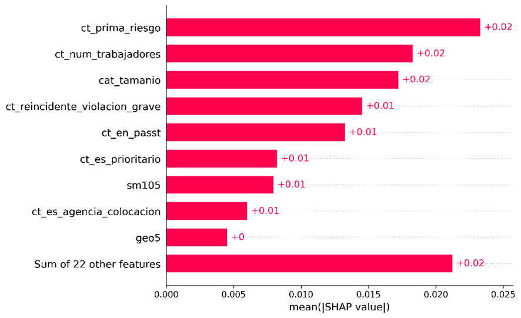
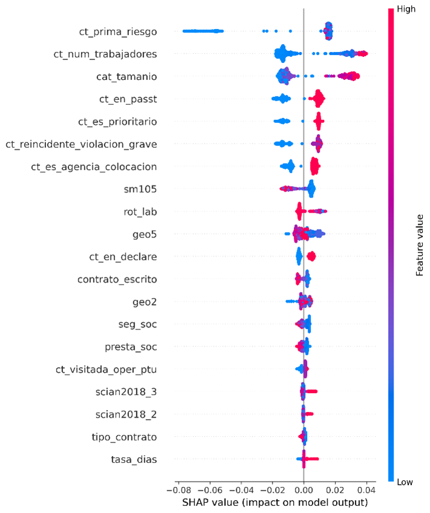
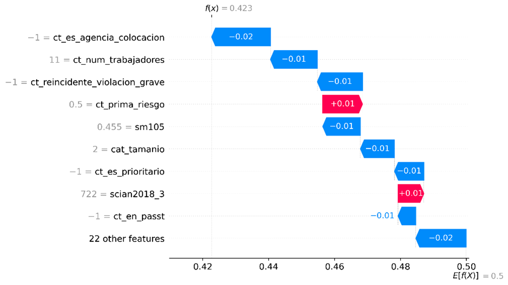

Capítulo 4 Procesamiento de las fuentes de información y generación de la MPR
Como ya fue mencionado, en los módulos I y II se procede a la actualización de indicadores a partir de la explotación de las fuentes de información, así como a la consulta del universo de CT, la imputación de indicadores a este universo y la predicción de riesgo que incorpora los resultados del modelo entrenado. En esta sección veremos en detalle cómo funcionan estos dos módulos fundamentales del SIDIL.
4.1 Módulo I: actualización de indicadores
Propósito
El propósito de este módulo es explotar las diferentes fuentes de información para la obtención de indicadores que luego servirán de variables de entrada al modelo predictivo.
EL SIDIL requiere mantener actualizado el conjunto de indicadores laborales porque es la información que se le atribuye o imputa de diferentes formas al universo de centros de trabajo para construir su perfil de riesgo en las diferentes submaterias de interés. Por su enfoque en la información más reciente disponible, a este módulo también se le denomina “coyuntural” y constituye la oferta de información.
Para cumplir con dicho propósito el SIDIL actualmente contempla la explotación de tres fuentes de información externas a la STPS:
La Encuesta Nacional de Ocupación y Empleo (ENOE y ENOE Nueva Edición).
Los registros de los trabajadores asegurados, patrones y accidentes reportados al IMSS.
El Censo Económico, en su edición del año 2019.
Requisitos para la ejecución de este módulo
Para la ejecución de este módulo no es necesario tener instalado Python, porque únicamente se utiliza R y R Studio.
4.1.1 Desafíos al tratamiento de bases de datos externas
Hay diversos desafíos que se pudieran presentar para la inclusión de bases de datos externas, o para la explotación de indicadores específicos de dichas bases. Aquí se mencionan los principales desafíos y posibles formas de atenderlos:
Cambios de nombres de variables y variables faltantes: a lo largo del tiempo, con o sin cierta ciclicidad, existen modificaciones en los nombres de los campos de interés en las bases que se explotan. En el caso del IMSS, por ejemplo, el campo registro solía llamarse cve_registro y antes cve_patronal. En el caso de la ENOE, el mismo nombre de variable representa dos conceptos distintos según se trate del primer trimestre o alguno de los restantes tres. A tal efecto, el SIDIL contempla un catálogo de campos que permitan asociar diferentes nombres al mismo concepto. Ver sección Catálogos de información.
Cambios en la utilización esperada de variables: Tal es el caso de los factores de expansión y sus ajustes conforme al censo poblacional: Con la nueva edición de la ENOE, se implementaron nuevos factores de expansión y variables muestrales para ajustar el diseño muestral de la encuesta conforme al nuevo censo de población. Esto hizo que, a partir del tercer trimestre de 2020 cambiaran las variables de diseño muestral de la encuesta. En el análisis coyuntural del SIDIL están considerados los nuevos nombres de variables muestrales, mientras que en el análisis histórico se toma en cuenta el cambio a partir del 2020. Si volviera a ocurrir un cambio en estas variables, bastará con cambiar el nombre de la misma en el catálogo correspondiente, como se señaló en el punto anterior. Por otra parte, este cambio del diseño muestral también ha propiciado cambios en las bases de años anteriores de la ENOE. La versión del SIDIL llega hasta la actualización realizada por el INEGI del 20 de febrero de 2023 en la cual se reemplazaron los archivos de las bases de datos de los cuatro trimestres de 2014. Si se desea, se puede actualizar el análisis histórico cuando se tengan disponibles las bases actualizadas del año 2013 y 2012.
Imposibilidad de acceso a un periodo de referencia: En el caso del IMSS este problema se exacerba porque para el cálculo de los indicadores siempre es necesario combinar diferentes tipos de insumos: por ejemplo, el cálculo de tasa de prevalencia de asegurados percibiendo hasta un 5% por encima del salario mínimo vigente requiere la unión del insumo puestos con el insumo de patrones registrados. La falta de uno de estos tipos (por ejemplo, puestos) imposibilita el cálculo del periodo de referencia. En cambio, sí sería posible calcular los indicadores que requieren de accidentes y patrones si ambos estuvieran disponibles. En cambio, en el caso de la ENOE típicamente las diferentes tablas que se requieren para la actualización de un periodo de referencia vienen juntas en un mismo archivo comprimido, por lo que, si éste no está disponible, todos los indicadores para ese periodo de referencia no podrían ser calculados.
Inclusión de nuevos indicadores. El diseño del SIDIL contempla la posibilidad de incluir nuevos indicadores con relativa facilidad, siguiendo el procedimiento estipulado en el recuadro a continuación. Es importante mencionar que la incorporación de nuevos indicadores, de requerirse su inclusión como variables de entrada para la predicción de riesgo, requiere el re-entrenamiento del modelo. Sin embargo, si sólo hubiera necesidad de incorporarlos como un indicador adicional para la caracterización “unidimensional” de un CT, entonces no es necesario volver a entrenar el modelo.
Recuadro 4.1: Procedimiento para la inclusión de nuevos indicadores
- Ajustes al cálculo de indicadores: Hay que distinguir la necesidad de la inclusión de nuevos indicadores que se especificó en el punto y recuadro anterior. Un cambio en la metodología de cálculo de un indicador no requiere mayor modificación que resguardar el script del cálculo del indicador con una fecha de versión posterior a la más reciente hasta entonces. Así el secuenciador de la explotación de la fuente de información detectará que esta es la nueva versión que se debe tomar. Por supuesto, el cálculo debe ser replicado hacia atrás en el tiempo para asegurar la consistencia temporal de la medición de indicadores.
Recuadro 4.2: Distinción entre incorporación de nuevos indicadores y actualización de método de cálculo de indicadores preexistentes
A diferencia de la incorporación de nuevos indicadores, solamente actualizar el método de cálculo de un indicador (por ejemplo, incorporar otra categoría de riesgos para el cálculo de cierta tasa) no requiere incluir una nueva carpeta, etc. Lo único que se requiere es:
-
Abrir el script anterior, la última versión del mismo
-
“Guardar como” con una fecha de versionado posterior a la anterior
-
Realizar las modificaciones
-
Guardar con esa nueva versión posterior.
4.1.2 Sobre niveles de agregación
Los indicadores calculados con todas las fuentes de información no siempre son atribuibles de manera directa a cada uno de los CT identificados nominativamente. Esto es por la propia naturaleza de los datos (censos y encuestas que por confidencialidad no publican información de las personas físicas y morales que responden a sus reactivos), por la falta de registro del patrón laboral en instancias como el IMSS, así como limitaciones en el procesamiento de la información en el DNE. La consecuencia es que los indicadores calculados a partir de las fuentes de información más diversas deben ser atribuidos a los CT a partir de características observables cuando resulta imposible atribuirlo de manera nominativa.
El SIDIL ha contemplado diferentes metodologías de imputación de dichos indicadores. Considerando la frecuencia con la que se realiza este proceso, el contexto administrativo en el que se ejecuta el SIDIL y la necesidad de transparencia de este proceso, se ha optado por atribuir los indicadores calculados a los CT a partir de la conjunción de tres características o dimensiones que pueden ser observados de manera completa o incompleta en los CT, según cada caso particular.
Estas características o dimensiones son:
Su ubicación geográfica, pudiendo especificarse en dos diferentes niveles:
- a nivel entidad (campo geo2) y
- a nivel municipio/alcaldía (campo geo5)
Su actividad principal, siguiendo el Sistema de Clasificación Industrial de América del Norte (SCIAN), y pudiendo especificarse en dos diferentes niveles:
- SCIAN a dos dígitos (campo scian2018_2) y
- SCIAN a tres dígitos (campo scian2018_3)
El tamaño del centro de trabajo. 3
Al ejecutar los scripts que desarrollan los indicadores de cada una de las fuentes de información se obtiene una tabla específica para cada indicador por fuente de información por periodo de referencia que incluye la siguiente información: los campos de dimensiones de niveles de agregación (cat_tamanio, geo2, geo5, scian2018 y_2, scian2018_3), campos de agregación (agregacion (etiqueta del nivel), agregacion_numerica, grupo_calidad_info1, grupo_calidad_info2, indicador, script_calculo, fecha_calculo, usuario, valor, cv, periodo).
Para no duplicar información en este manual, se deja al lector consultar en la sección Catálogos de información, la clasificación de los atributos que se encuentra en dichos catálogos.
En la gráfica a continuación se observa un ejemplo de cómo se pueden distribuir las estimaciones puntuales calculadas en los diversos niveles de agregación disponibles para una fuente de información, en este caso, la ENOE, y con relación al coeficiente de variación de dichas estimaciones puntuales.
Recuadro 4.3: Modificaciones a los niveles de agregación
La inclusión de nuevas fuentes de información, o cambios sustantivos a las existentes, podría causar la necesidad de revisar los niveles de agregación. Es altamente improbable que esto ocurra, sin embargo, los pasos serían los siguientes:
-
Redefinir el catálogo de niveles de agregación.
-
En el script de configuración inicial, ajustar la lectura y definición de los niveles de agregación.
- Los niveles de agregación van numerados: agregacion_01, agregacion_02, etc. mismos que se generan como parámetros individuales y luego se agrupan en una lista. Se sugiere no modificar la numeración para que no sea necesario ajustar los scripts de los indicadores que recorren dichos niveles para agrupar las observaciones que cumplan con las categorías incluidas en ellos.
-
Revisar los scripts de matching, tanto el coyuntural como el histórico, toda vez que potencialmente habría más variables.
-
Revisar la especificación de la interfaz de consulta para que refleje posibles variaciones en el número o composición de las dimensiones escogidas.
4.1.3 Sobre estimaciones puntuales nominativas
Los registros administrativos del IMSS permiten generar información específica para un centro de trabajo que es identificado de manera unívoca a través de su clave patronal. Esta información tan específica es de mucha utilidad para la caracterización fidedigna de los CT en el DNE.
Cabe cuestionarse que tanto para la imputación de estimaciones puntuales nominativas como para el enriquecimiento de atributos de geografía, tamaño y clasificación industrial, sería deseable incorporar un segundo campo a la “llave” entre los datos del DNE y los nominativos del IMSS. Esto para evitar posibles imputaciones equivocadas. Se han realizado pruebas incluyendo el número de código postal como campo adicional a la clave patronal, sin embargo, dicha inclusión vuelve demasiado restrictiva la imputación nominativa, es decir, son demasiado pocos los CT del DNE que se pueden asociar al universo de patrones del IMSS. En números redondos, en lugar de imputarle a más de 170 mil CT del DNE información del IMSS, al incluir el código postal, se reduce a cerca de 50 mil registros.
Conforme se profundice la aplicación del SIDIL y se realicen las mejoras planeadas al DNE, convendría revisar nuevamente el criterio de imputación nominativa.
Gestión de archivos de estimaciones puntuales por fuente de información
Como se observa en la sección de Estructura y flujos de trabajo, la estructura de carpetas prevé una carpeta para cada indicador. A su interior, a su vez se incluye una subcarpeta llamada anteriores misma que permite almacenar los outputs de procesos anteriores.
Recuadro 4.4: Organización de las estimaciones puntuales por indicador
Todos los cálculos de indicadores concluyen generando un único archivo en formato .Rds que reúne todas las estimaciones puntuales para todos los niveles de información, habiendo una tabla para cada indicador, fuente de información y periodo. Cabe notar que el algoritmo de matching coyuntural que recupera la información de estos outputs selecciona únicamente el output de cada indicador según la fecha de creación (parámetro v) más reciente, independientemente de que esté resguardo en la subcarpeta anteriores o en un nivel superior. Incluso lo detectaría si estuviera en la carpeta a un nivel mayor (por ejemplo, res_coy_ENOE o res_coy_IMSS). Es decir, mover los indicadores a la subcarpeta anterior únicamente es a fin de facilitar la organización de los archivos (para la inteligibilidad humana), más no tiene afectaciones en la ejecución del código.
Tratamiento de industrias manufactureras, transportes, correo y almacenamiento
Todos los indicadores, independiente de su fuente de información, se calculan para las diversas combinaciones posibles de las diferentes categorías del SCIAN a 2 y 3 dígitos, combinado respectivamente con las categorías de las otras dos dimensiones que constituyen los niveles de agregación (geografía y tamaño). En el caso del SCIAN 31-33 (industrias manufactureras) y 48-49 (transportes, correos y almacenamiento) se realiza un tratamiento especial. Esto porque, dada la cantidad de subsectores que tiene, el SCIAN utiliza los sectores 31, 32 y 33 para agrupar todos los subsectores de las industrias manufactureras, y el 48 y 49 para transportes, correos y almacenamiento.
Pero, en sentido estricto, cuando un usuario final quiere obtener el valor de una estimación puntual representativa para uno de estos dos grandes sectores, no quiere preocuparse por su codificación, sino que busca obtener un único valor representativo para todo el sector, sin importar si a dos dígitos sería el 31 o 32 o 33. Es decir, el promedio del sector industria manufacturera, debe ser el mismo independientemente de que el subsector (actividad, rama… ) estén finalmente agrupados bajo el identificador 31, 32 ó 33. Lo análogo, por supuesto, con transportes, correos y almacenamiento. A tal fin se realiza el siguiente procedimiento.
Previo a la estimación puntual de un indicador, el campo scian2018_2 se uniforma a 31 si el campo scian2018_3 comienza con 32 o 33.
Cuando el nivel de agregación que se calcula excluye el scian2018_3 pero incluye el scian2018_2 (por ejemplo, un nivel de agregación “2_geo2_act2”) entonces el cálculo de los sectores 31 y 48 en realidad están también incluyendo las observaciones que se clasifican como 32 y 33 ó 49, respectivamente.
Finalizado el cálculo de los indicadores, se replican los resultados obtenidos para las categorías 31 y 48 para incluir nuevas observaciones (sólo para los niveles de agregación que incluyen scian2018_2 pero no scian2018_3) con los número 32, 33 y 49, respectivamente.
4.1.4 Especificaciones por fuente de información
Esta sección reúne información relevante en dos niveles. Por un lado, se ofrecen detalles de los indicadores que se calculan para cada una de las fuentes de información. Por otro lado, se informan los procedimientos de cálculo de dichos indicadores y aspectos que requieren mayor cautela. A continuación, primero se presenta el resumen de las otras subsecciones que siguen. Se observa que la gran mayoría de las fuentes información son de carácter administrativo. Las excepciones vienen de la ENOE y del CENSO gestionadas por INEGI.
| Fuente | Responsable de producción | Acceso | Tipo de fuente | Frecuencia de actualización |
|---|---|---|---|---|
| DNE | STPS | Interno | Administrativo | Diaria |
| SIAPI/SIPAS* | STPS | Interno | Administrativo | Diaria |
| Asegurados en el IMSS | IMSS | Confidencial, sólo estadísticas agregadas | Administrativo | Mensual |
| Patrones en el IMSS | IMSS | Confidencial, sólo estadísticas agregadas | Administrativo | Mensual |
| Accidentes reportados al IMSS | IMSS | Confidencial, sólo estadísticas agregadas | Administrativo | Semestral |
| ENOE | INEGI | Público | Encuesta | Trimestral |
| Censo Económico | INEGI | Interno | Censo (Tabla generada en colaboración INEGI-DGIET(STPS)) | Quinquenal |
Todas estas fuentes de información se incorp oran y deberán seguir incorporándose conforme surjan actualizaciones futuras, en un determinado formato, estructura de nombre, ubicación especifica y frecuencia de actualización. Estas características fundamentales serán especificadas en cada una de las subsecciones siguientes.
Recuadro 4.5: Resguardo de las bases originales
El adecuado resguardo de la información original provista por las fuentes de información es crítico para el funcionamiento del sistema. Algunos puntos importantes a considerar:
- Sintaxis para el nombrado de los insumos. Dado que esta información no se encuentra como campo “dentro” de los insumos, el correcto nombrado del archivo digital es indispensable. AIR ha detectado los patrones más frecuentes de cómo se guardan los diferentes insumos de las diferentes fuentes de información, y esto fue reflejado en los scripts que los utilizan, motivo por el cual no se sugiere modificaciones a la sintaxis (salvo excepciones) sino constancia en los patrones actuales.
- Ubicación de los insumos en las carpetas y subcarpetas adecuadas. El resguardo adecuado del insumo incluye su ubicación en la carpeta adecuada y en el formato especificado, toda vez que los algoritmos detectan el tipo de fuente, el periodo de referencia, etc., a partir de las carpetas, subcarpetas y nombres que se estipulan en el catálogo de fuentes. Resguardo para la reproducibilidad. El SIDIL descansa sobre un versionado de scripts y outputs, resguardando el mínimo de resultados intermedios, para hacer un uso eficiente del almacenamiento a disco. Lo hace bajo el supuesto fundamental de que los insumos se mantendrán disponibles en las carpetas especificadas o al menos resguardados en su formato original en otro lugar pero disponibles para ser nuevamente colocadas en su carpeta específica para reproducir una determina actualización.
- No duplicidad de insumos para un mismo periodo de referencia: no se debe guardar más de un archivo para un mismo insumo de un determinado periodo de referencia. Esto también aplica aunque fueran en formatos distintos: sólo puede haber un insumo para un periodo de referencia dentro de la carpeta especificada.
4.1.4.1 La ENOE
La Encuesta Nacional de Ocupación y Empleo (ENOE y ENOE Nueva Edición) brinda información de manera trimestral sobre el mercado laboral mexicano. Esta encuesta es representativa a nivel entidad federativa.
La ENOE cuenta con cinco tablas, de las cuales se utilizan tres para generar 11 indicadores en 11 niveles de agregación. Las tablas son: 1) Tabla con los datos sociodemográficos (SDEM), 2) Tabla de cuestionario de ocupación y empleo I (COE1) y, 3) Tabla de cuestionario de ocupación y empleo II (COE2). El INEGI aplica un cuestionario básico en los trimestres dos, tres y cuatro de cada año, y un cuestionario ampliado en el primer trimestre. El cuestionario ampliado es el que permite a SIDIL estimar una tasa de sindicalización, mismo que no es posible hacer en los trimestres restantes.
Frecuencia de actualización y propuesta de calendarización
Las bases de datos de la encuesta se actualizan de manera trimestral, por lo cual esa será la frecuencia de actualización. Si bien la STPS recibe las bases de la ENOE por parte del INEGI de manera directa y con cierta anticipación de su publicación (y son las bases que utiliza el SIDIL), no es necesario ejecutar la actualización de inmediato, sino que se puede tomar como guía el calendario de publicaciones de INEGI4, las próximas publicaciones de la ENOE desde la realización de este manual son: primer trimestre 2023: 29 de mayo de 2023, segundo trimestre 2023: 28 de agosto de 2023, tercer trimestre 2023: 27 de noviembre de 2023.
Por supuesto, la DGIET debe estar atenta a modificaciones en este calendario, así como de las actualizaciones previstas para 2024 y a posteriori.
Se sugiere que la actualización de los indicadores de la ENOE se realice con cada actualización de la encuesta, es decir, durante las últimas semanas del mes de febrero, de mayo, de agosto y de noviembre. Esto sujeto a cambios en la calendarización de la publicación de la ENOE.
Indicadores que se calculan
Con la ENOE se calculan once indicadores, de los cuales para diez la información se encuentra disponible de manera trimestral y uno con frecuencia anual. En la siguiente tabla se muestra el detalle de los indicadores. Notar que todos los indicadores, incluidos los de la ENOE, antes del entrenamiento del modelo predictivo (módulo IV) y de la predicción del mismo (módulo II) se estandarizan entre 0 y 1 e invierten para expresar que “más es peor”, es decir, un mayor percentil de un indicador se asocia a peores condiciones laborales:
| Indicador | Descripción | Cálculo | Frecuencia de cálculo |
|---|---|---|---|
| Días trabajados | Promedio de días trabajados de personas trabajadoras subordinadas y remuneradas. | Media de días trabajados (dias_trab: variable numérica de 1 a 7) | Trimestral |
| Horas trabajadas | Promedio de horas trabajadas de personas trabajadoras subordinadas y remuneradas. | Media de horas trabajadas (hrs_trab: variable numérica continua de 1 a 168) | Trimestral |
| Acceso a prestaciones sociales | Promedio de personas trabajadoras subordinadas y remuneradas con al menos una prestación social: vacaciones, aguinaldo y reparto de utilidades (sin considerar acceso a servicios de salud) | Media de acceso a prestaciones sociales (“presta_soc”: 1=Con al menos una prestación social (sin considerar el acceso a las instituciones de salud) 0= Sin prestaciones sociales (sin considerar el acceso a las instituciones de salud) ) | Trimestral |
| Acceso a seguridad social | Promedio de personas trabajadoras subordinadas y remuneradas con acceso a instituciones de salud | Media de acceso a seguridad social (“seg_soc”1= Con acceso a instituciones de salud, 0=sin acceso a instituciones de salud) | Trimestral |
| Contrato escrito | Promedio de personas trabajadoras subordinadas y remuneradas con contrato escrito | Media de contrato escrito (“contrato_escrito”: 1=con contrato escrito , 0=sin contrato escrito) | Trimestral |
| Tipo de contrato | Promedio de personas trabajadoras subordinadas y remuneradas por tipo de contrato: de base/planta/tiempo indefinido o temporal. | Media tipo de contrato (“tipo_contrato” :1= De base, planta o por tiempo indefinido, 0=Temporal (menor a seis meses, mayor a seis meses pero menor a un año, hasta el término de la obra)) | Trimestral |
| Ingreso laboral por mes | Promedio de ingreso por mes de personas subordinadas y remuneradas. | Media del ingreso por mes (“ingocup”: ingresos mayores a 0) | Trimestral |
| Ingreso laboral por hora | Promedio de ingreso por hora de personas trabajadoras subordinadas y remuneradas. | Media del ingreso por hora (“ing_x_hrs”: ingresos mayores a 0) | Trimestral |
| Salario mínimo | Porcentaje de personas trabajadoras subordinadas y remuneradas que perciben hasta un salario mínimo | Media de personas con ingresos mayores a un salario mínimo (“ing_min: 1=personas que perciben más de un salario mínimo; 0=personas con ingresos de hasta un salario mínimo) | Trimestral |
| Igualdad salarial | Brecha de ingresos (promedio simple) entre personas trabajadoras subordinadas y remuneradas. | Ratio de media de ingresos mensuales mujeres entre la media de ingresos mensuales de hombres. (“brecha_gen”: 1= la media del salario entre hombres y mujeres es igual, >1= La media del ingreso de las mujeres es mayor que el de los hombres, <1= La media del ingreso de los hombres es mayor que el de las mujeres) | Trimestral |
| Tasa de sindicalización | Porcentaje de personas trabajadoras subordinadas y remuneradas que pertenecen a un sindicato | Media de personas sindicalizadas (“sindicato”, 1=pertenece a un sindicato, 0=no pertenece a un sindicato) | Anual (con la base del primer trimestre de cada año) |
El cálculo de los indicadores se realizará en las 11 agregaciones, las cuales consideran todas las combinaciones de los siguientes niveles: nivel nacional (geo0), entidad federativa (geo2), tamaño del centro de trabajo (cat_tamanio), clasificación industrial SCIAN a dos y tres dígitos (scian2018_2 y scian2018_3, respectivamente).
Entradas - Inputs
Los insumos principales para la generación de los 11 indicadores son las bases de datos originales de la ENOE que son proporcionadas por el INEGI a la DGIET de la STPS.
Para que el SIDIL detecte el último trimestre disponible de manera correcta es imprescindible que los archivos originales de la ENOE se guarden con la siguiente estructura de nombre y que se mantenga así durante todo momento:
ENOEN_COE1(trimestre del 1 al 4) T(últimos dos números del año) _2x.dbf
- Ejemplo: ENOEN_COE1T222_2x.dbf
ENOEN_COE2(trimestre del 1 al 4) T(últimos dos números del año) _2x.dbf
- Ejemplo: ENOEN_COE2T222_2x.dbf
ENOEN_SDEM (trimestre del 1 al 4) T(últimos dos números del año) _2x.dbf
- ENOEN_SDEMT222_2x.dbf
(Notar que todas las bases de datos de datos deben estar en formato .dbf)
Particularmente se enfatiza que los periodos de referencia deben ser: un dígito para el trimestre, seguido por una T, seguido por dos dígitos para el año, seguido por un “_” y “2x”, finalizando con el formato del archivo “.dbf”. Ver Recuadro XXXX_8_XXX
Se utilizan estas bases para seguir los principios de uso mínimo de memoria de las computadoras y de aprovechamiento de los recursos ya disponibles por la Secretaría, por lo que esta estructura se establece siguiendo la estructura real de los archivos al momento de ser entregado este manual. Si esta estructura cambia, es imprescindible que los archivos se guarden con nombres que sigan la estructura anteriormente expuesta en orden de que se puedan leer los archivos y generar los indicadores.
Adicionalmente, para la explotación correcta de la ENOE se utilizan catálogos de los siguientes tipos:
De clasificación industrial
De nombres de campos (homologación de nombres de variables)
De indicadores
Aplicación de scripts
Para la generación de los 11 indicadores de la ENOE se cuenta con tres tipos de scripts en lenguaje R:
Script secuenciador (1script): Este script secuenciador inicia con la definición de tres objetos: 1)sinkmode: que si es igual a TRUE (verdadero) genera y guarda el log en un archivo “.txt”; 2) val_referencia: que si es igual a TRUE genera una tabla que compara las estimaciones puntuales generadas con las realizadas de manera histórica para ciertas agregaciones; y 3) muestra: que si es igual a verdadero o TRUE toma solo una muestra de la base del scirpt de transformación, esta opción es útil para probar cambios en los scripts. Para el funcionamiento habitual del script, los objetos se entregarán definidos de la siguiente manera: sinkmode=TRUE; val_referencia=TRUE y muestra=FALSE-. El script llama y corre el script de configuración inicial, así como a todos los scripts descriptos en esta sección. El script inicia con el llamado y ejecución del script de configuración e inicia la escritura del log. Posteriormente llama y ejecuta el script de extracción y transformación, de donde toma la definición del periodo y del año. Al finalizar cada ejecución de los scripts da un mensaje de confirmación o de error de estos procesos. Luego, genera un mensaje donde se muestra el periodo y el año que se utilizarán para el cálculo de los indicadores, llama y ejecuta los 11 scripts de los 11 indicadores, dando un mensaje de confirmación o error al culminar cada proceso. Finalmente, cierra la escritura del log y genera un sonido que indica que ya ha terminado todo el proceso.
Script de transformación (1 script): Este script extrae y transforma las bases de datos de insumos principales (referidas en la sección anterior) para generar una sola base de datos con la información necesaria para el cálculo de los indicadores. Primero, crea una lista de los archivos disponibles en la carpeta de insumos originales de la ENOE (orig_ENOE), identifica los nombres de los cuestionarios, el trimestre y el año, para posteriormente quedarse únicamente con el último trimestre disponible de los cuestionarios SDEM, COE1 y COE2. Luego, carga estas bases y realiza el pegado de los cuestionarios. Finalmente, cambia los nombres de las variables clave para las agregaciones, filtra la base quedándose únicamente con la población objetivo, aplica funciones para identificar las variables que se utilizarán para los indicadores según el trimestre que se haya cargado y cambia su nombre5. La base de resultados contiene la información relativa a la población trabajadora subordinada y remunerada durante el periodo de referencia. Para minimizar el uso de la memoria en disco, esta nueva base de datos generada no se guarda en la memoria de manera permanente. El mensaje que indica la culminación de este script señala que se ha generado la base de datos de población trabajadora subordinada y remunerada para determinado periodo y año, mostrando el total de hombres y mujeres de esta población. Este mensaje de cierre es de utilidad para confirmar que se ejecutó el script para el periodo y año correcto, además de que el pegado y manipulación de las bases fue el correcto (por medio del número de la población de mujeres y hombres trabajadores subordinados y remunerados).
Scripts de generación de indicadores (11 scripts): Estos scripts toman la base transformada para generar cada uno de los indicadores (un script por indicador) con sus respectivas estimaciones puntuales para los diferentes niveles de agregación que aplica a la fuente de información. Primero, se crea o modifica la variable objetivo del indicador, para posteriormente declarar la encuesta. Luego, se emplea un loop para calcular el indicador a lo largo de las estimaciones correspondientes, y calcular la agregación a nivel 0 (nivel nacional). Finalmente, se crea un solo archivo con todas las agregaciones del indicador, se generan los campos de identificación de cada agregación, y se limpian las estimaciones puntuales quitando los 0 y 1 en el caso de los indicadores que utilizan la media. Estos scripts generan un archivo .Rds cada uno, los cuales posteriormente serán almacenados en la memoria de la computadora o el servidor utilizado con el nombre del indicador y la fecha de generación.
En la siguiente tabla se detalla el proceso de ejecución de cada script, incluyendo el tipo de ejecución (manual por un usuario o automatizada), outputs (resultados que generan cada uno de los scripts), mensajes confirmatorios esperados, los cuales indican que el proceso se ejecutó de manera correcta y los outputs o resultados son los esperados, y posibles mensajes de error.
| Ejecución del usuario | Ejecución automatizada | Output | Mensajes confirmatorios esperados[1] | Posibles mensajes de error o advertencia |
|---|---|---|---|---|
| Script secuenciador: 1_C_1_S_SE_ENOE | Script de configuración inicial: 0_config_inicial | Declaración de parámetros en la RAM | “Hora sistema. INFO: Se ha ejecutado con exito el scipt 0_config_inicial.R” | “Hora sistema. ERROR No fue posible ejecutar el script 0_config_inicial.R. Detalle:” |
| Script secuenciador: 1_C_1_S_SE_ENOE | Script de configuración inicial: 0_config_inicial | Declaración de parámetros en la RAM | “Hora sistema. INFO: Se ha iniciado la escritura del log de indicadores coyunturales de la ENOE” | “Hora sistema. ERROR No fue posible iniciar la escritura del log de indicadores coyunturales de la ENOE. Detalle” |
| Script secuenciador: 1_C_1_S_SE_ENOE | Script de extracción y transformación: 1_extraccion_ENOE_aaaa_mm_dd.R | Una matriz con la base de datos limpia (no se guarda en disco rígido) | “Hora sistema . INFO: Se ha ejecutado con exito el scipt limpieza y transformación 1_extraccion_ENOE_v.R” | “Hora sistema. ERROR No fue posible ejecutar el script 1_B_1_S_EST_ENOE_v. Detalle:” |
| Script secuenciador: 1_C_1_S_SE_ENOE | Script de extracción y transformación: 1_extraccion_ENOE_aaaa_mm_dd.R | Una matriz con la base de datos limpia (no se guarda en disco rígido) | “Hora sistema. INFO: Se ha generado la base de datos de población trabajadora subordinada y remunerada para el periodo t del año 20 con un total de hombres y __mujeres.”[2] | “Hora sistema ADVERTENCIA Se introdujeron NAs: simpleWarning in FUN(X[[i]], …): NAs introduced by coerción” |
| Script secuenciador: 1_C_1_S_SE_ENOE | Scripts de cálculo de indicador: 1_brecha_gen_ENOE_aaaa_mm_dd.R, 1_contrato_escrito_ENOE_aaaa_mm_dd.R, 1_dias_trab_ENOE_aaaa_mm_dd.R, 1_hrs_trab_ENOE_aaaa_mm_dd.R, 1_ing_min_ENOE_aaaa_mm_dd.R, 1_ing_x_hrs_ENOE_aaaa_mm_dd.R, 1_ing_x_mes_ENOE_aaaa_mm_dd.R, 1_presta_soc_ENOE_aaaa_mm_dd.R, 1_seg_soc_ENOE_aaaa_mm_dd.R, 1_sindicato_ENOE_aaaa_mm_dd.R, 1_tipo_contrato_ENOE_aaaa_mm_dd.R | Para cada script se genera un archivo RDS con las estimaciones puntuales del indicador para el periodo analizado | ““Hora sistema. INFO: Los indicadores se generarán utilizando la base de datos de la ENOE del periodo _t del anio 20__” | ” Hora sistema. ERROR No está disponible el indicador. Detalle:” (Este error no impedirá el cálculo del resto de indicadores.)[3] |
| Script secuenciador: 1_C_1_S_SE_ENOE | Scripts de cálculo de indicador: 1_brecha_gen_ENOE_aaaa_mm_dd.R, 1_contrato_escrito_ENOE_aaaa_mm_dd.R, 1_dias_trab_ENOE_aaaa_mm_dd.R, 1_hrs_trab_ENOE_aaaa_mm_dd.R, 1_ing_min_ENOE_aaaa_mm_dd.R, 1_ing_x_hrs_ENOE_aaaa_mm_dd.R, 1_ing_x_mes_ENOE_aaaa_mm_dd.R, 1_presta_soc_ENOE_aaaa_mm_dd.R, 1_seg_soc_ENOE_aaaa_mm_dd.R, 1_sindicato_ENOE_aaaa_mm_dd.R, 1_tipo_contrato_ENOE_aaaa_mm_dd.R | Para cada script se genera un archivo RDS con las estimaciones puntuales del indicador para el periodo analizado | Para cada uno de los indicadores: “Se ha calculado el indicador _ en agregacion _ con _ estimaciones puntuales a las (fecha_hora)”, ” INFO: Se han guardado 10761 estimaciones puntuales del indicador brecha_gen para el periodo _ en la _” | Si se deja de producir un campo de los utilizados en los indicadores desde la fuente de información original, se mostrará este error y no se generará el indicador. |
Salidas - Outputs
Los outputs o resultados esperados finales de la aplicación de los scripts de la ENOE son 11 archivos .Rds correspondientes a cada uno de los 11 indicadores para un periodo de referencia, los cuales contienen las estimaciones puntuales de los indicadores en los (coincidentemente) 11 niveles de agregación para el último periodo disponible.
Estas estimaciones puntuales coyunturales serán el insumo del matching coyuntural, y serán imputadas a los CT según el nivel de agregación correspondiente a la información disponible de cada centro de trabajo.
4.1.4.2 Registros administrativos del IMSS
La incorporación de las tablas de registros administrativos que el IMSS comparte con la STPS es una muy importante incorporación al SIDIL, dadas las siguientes características de este registro administrativo:
Su elevado nivel de cobertura: con tasas de informalidad que rondan el 55% a nivel nacional6 esta información cubre cerca de la mitad de la población trabajadora. Por supuesto que, a diferencia del DNE, los CT registrados en la base de patrones únicamente son los empleadores formales7.
Al ser un registro administrativo cabe remarcar que su propósito no es (primordialmente) la estadística - no surge de una encuesta, no existen parámetros de diseño complejo, por ello la definición y utilidad que tienen los coeficientes de variación de una estimación puntual deben ser interpretados con su debida cautela.
El IMSS utiliza su propia clasificación industrial, misma que no es del todo “emparejable” con la del SCIAN que se utiliza en estadísticas del INEGI. Para atender a este desafío se desarrolló una tabla de correspondencias unidireccional del IMSS al SCIAN a tres y dos dígitos, misma que fue cotejada y enriquecida con resultados de un trabajo independiente realizado por la propia STPS junto con el INEGI y el IMSS.
Las bases del IMSS contienen registros más voluminosos que las demás fuentes de información utilizadas, ya que la base de patrones es más de un millón de observaciones y la de puestos asegurados, supera los 20 millones de registros, ambas de actualización mensual. Mientras tanto la base de riesgos/accidentes concluye el año reportando aproximadamente medio millón de observaciones.
Por lo anterior, en ciertos procedimientos específicos, como, por ejemplo, el completado del campo de Clave Única de Registro Poblacional (CURP) a partir de un número de seguridad social (NSS), o el cálculo de ciertos indicadores como el de rotación laboral que requiere la construcción de un panel de mes contra mes, se procesa la información total en un conjunto de fracciones (que toman en consideración la memoria RAM disponible en la computadora). Estas fracciones se escriben temporalmente a disco rígido, se vuelven a leer para conformar una única tabla y luego se eliminan.
Indicadores que se calculan
A continuación, se detallan los indicadores que se calculan a partir de los inputs que se reflejan en la siguiente subsección. Notar que todos los indicadores, incluidos los que se obtienen con datos del IMSS, antes del entrenamiento del modelo predictivo (Ver Módulo IV ) y de la predicción del mismo (Ver Módulo II ) se estandarizan entre 0 y 1 e invierten para expresar que “más es peor”, es decir, un mayor percentil de un indicador se asocia a peores condiciones laborales.
| Indicador | Descripción | Cálculo | Frecuencia de cálculo |
|---|---|---|---|
| Rotación laboral | La inversa de la tasa de rotación laboral expresada por las altas y bajas de asegurados/as (personas físicas) que suceden a nivel registro patronal. | 1 dividido el resultado de la raíz cuadrada de la suma de altas al cuadrado y bajas al cuadrado dividido el cuadrado del total de asegurados en el periodo anterior por el mismo empleador, multiplicado por 100. Altas son aquellos casos en los que una persona no estaba registrada en el mes anterior por el empleador pero sí aparece asegurada en el mes de interés. Viceversa las bajas. | Trimestral, como promedio del cálculo a nivel mensual, para los últimos tres meses disponibles |
| Igualdad salarial | Brecha de ingresos (promedio simple) por sexo calculado a nivel registro patronal. | Ratio de media de ingresos mensuales mujeres entre la media de ingresos mensuales de hombres. (“brecha_gen”: 1= la media del salario entre hombres y mujeres es igual, >1= La media del ingreso de las mujeres es mayor que el de los hombres, <1= La media del ingreso de los hombres es mayor que el de las mujeres) | Trimestral, como promedio del cálculo a nivel mensual, para los últimos tres meses disponibles |
| Tasa de prevalencia de hasta 105% del salario mínimo vigente | El complemento (100 -) del porcentaje de personas que perciben hasta 105% del salario mínimo vigente en el municipio del patrón; siendo el porcentaje topado a 100. | valor=100-min〖{100 *(cuenta aseg105sm)/(trabajadores asegurados);100} 〗 | Trimestral, como promedio del cálculo a nivel mensual, para los últimos tres meses disponibles |
| Tasa de prevalencia de hasta 105% del salario mínimo vigente | El complemento (100 -) del porcentaje de personas que perciben hasta 105% del salario mínimo vigente en el municipio del patrón; siendo el porcentaje topado a 100. | Se define un nivel de tolerancia (actualmente 5%). Quienes perciban hasta ese nivel, cuentan como un asegurado que percibe hasta 105% del salario mínimo. Luego se expresa en términos de trabajador asegurado en el centro de trabajo. | Trimestral, como promedio del cálculo a nivel mensual, para los últimos tres meses disponibles |
| Tasa de accidentes por trabajador asegurado | La inversa del número de accidentes (riesgos) reportados, expresado como porcentaje de trabajador asegurado.Una vez imputados a los centros de trabajo en el DNE (módulo II), este indicador se estandariza entre 0 y 1, siendo 1 el máximo valor del universo de estimaciones puntuales imputadas a los CT. | valor=100-min〖{100 *(cuenta accidentes)/(promedio trabajadores asegurados);100} 〗 | Trimestral, como promedio del cálculo a nivel mensual, para los últimos tres meses disponibles |
| Tasa de días de incapacidad por trabajador asegurado | El complemento del porcentaje de días de incapacidad otorgados por accidente en el centro de trabajo, expresado por trabajador asegurado | 100 menos la tasa que surge de tomar el número de días de incapacidad declarados por trabajador asegurado en el riesgo tipo dividido suma de días por trabajador asegurado. | Trimestral, como promedio del cálculo a nivel mensual, para los últimos tres meses disponibles |
| Concentración de mercado | Participación del centro de trabajo sobre el total de asegurados dentro del sector de actividad económica a tres dígitos y área urbana. | valor=100-min〖{participacion en area urbana y scian 3;100} 〗 | Trimestral, como promedio del cálculo a nivel mensual |
| Concentración de mercado | Participación del centro de trabajo sobre el total de asegurados dentro del sector de actividad económica a tres dígitos y área urbana. | Participación del empleador sobre el total de asegurados, dentro del área urbana, scian2 y scian3. | Trimestral, como promedio del cálculo a nivel mensual |
Hay algunas diferencias importantes respecto a la ENOE en cuanto a la generación de indicadores:
La unidad de análisis para el cálculo de los indicadores es el CT, es decir, la clave del registro patronal. La medición de cierto fenómeno se realiza a partir de la información observada en los empleos asegurados en un CT, independientemente de que se represente luego en uno de los 18 diferentes niveles de agregación.
El cálculo de los indicadores se realiza en las agregaciones que consideran todas las combinaciones de los siguientes niveles: nivel nacional (geo0), entidad federativa (geo2) y municipio (geo5), tamaño del centro de trabajo (cat_tamanio), clasificación industrial SCIAN a dos y tres dígitos (scian2018_2 y scian2018_3, respectivamente).
En todos los casos, el cálculo se realiza primero a nivel mensual, y luego se toman promedios móviles tomando en consideración los últimos 3 meses (cuántos meses entran en la toma del promedio móvil es un parámetro configurable). Algunas especificaciones adicionales.
Para el cálculo de los indicadores calculados a partir del insumo accidentes/riesgos se toma en consideración el promedio de trabajadores asegurados en el último año calendario, toda vez que el insumo accidentes es acumulativo. Esto permite expresar la ocurrencia de accidentes o días de incapacidad, en términos de un promedio de trabajadores asegurados, mitigando el efecto de cambios abruptos en la cuenta de trabajadores asegurados reportado en el insumo patrones.
La elaboración de un promedio trimestral no guarda relación temporal con un trimestre calendario, es decir, para la elaboración del dato a mayo 2023 se toma el dato disponible de mayo, abril y marzo de 2023 (independiente de que los meses estén en diferentes trimestres del calendario),
Los indicadores de concentración de mercado, tasa de accidentes por trabajador asegurado y tasa de prevalencia de salario mínimos están expuestos a posibles pero mínimas inconsistencias entre la base de patrones y puestos en cuanto al número de trabajadores reportados entre ambas bases. A su vez, son indicadores que miden fenómenos “negativos” (“más es peor”). Combinados estos factores se opta por tomar el complemento, así estos indicadores quedan expresados en términos “positivos” (“más es mejor”).
El insumo accidentes (riesgos) es acumulativo al interior de un año calendario, es decir, si típicamente la STPS recibe este insumo en marzo y septiembre de un año, las observaciones de marzo se vuelven a incluir en septiembre. El algoritmo detecta el último insumo disponible para cada año para únicamente explotar estas observaciones una sola vez. Al hacerlo, expresa la tasa de accidentes y tasa de días de incapacidad por trabajador asegurado, tomando en consideración el promedio de trabajadores asegurados registrados en los respectivos CT (tabla patrones) en los últimos 12 meses.
Las estimaciones puntuales de los indicadores en cada nivel de agregación serán imputadas a cada centro de trabajo según sus características. Pero previo a esto, como se verá en el siguiente capítulo, ocurre una imputación de orden nominativo (por clave de registro patronal) y de enriquecimiento de las dimensiones clave que en el DNE estén como campos vacíos. La imputación de enriquecimiento precede a la imputación nominativa, a la vez que la imputación nominativa tiene prioridad por encima de la imputación por nivel de agregación.
Los indicadores del IMSS, a diferencia de los de la ENOE, tienen insumos de corte mensual, pero las estimaciones que se imputan a los centros de trabajo toman un promedio de los últimos tres meses. En concreto, el cálculo es primero a nivel mensual de cada indicador (tanto el cálculo nominativo como el cálculo por nivel de agregación) y luego se toma un promedio ponderado por el número de registros de los últimos tres meses disponibles.
Entradas - Inputs
Los insumos principales para la generación de los seis indicadores son las bases de datos originales del IMSS, que son proporcionadas a la DGIET de la STPS a través de un convenio celebrado entre ambas instituciones.
Cabe notar que el personal de AIR no ha accedido a los microdatos confidenciales del IMSS en poder de la STPS; sino que únicamente ha desarrollado los algoritmos que explotan dicha información asegurando su correcto funcionamiento a partir del análisis de resultados agregados.
Los tres insumos que se utilizan son los siguientes:
Base de patrones registrados ante el IMSS, corte mensual, en formato de texto separado por tabulados (.tab)
Ejemplo: PATRONES_STPS_2022131.tab
Notar que en ocasiones dicho insumo también se encontró comprimido en formatos .rar, .gz y .7z mismo que el código de extracción y transformación contempla y atiende. No se aceptan otros formatos de compresión.
Sí se aceptan otros formatos de separación, pero se sugiere mantener el tabulado toda vez que la coma a veces aparece en las razones sociales y puede desordenar las columnas. De hecho, en el año 2019 hay pérdida de información en los meses de febrero a abril por la calidad de la fuente de información original en este preciso aspecto.
Base de puestos asegurados ante el IMSS, también de corte mensual y en formato de texto separado por tabulados (.tab)
Ejemplo: PAFINALMES_F_2022231.tab
Las mismas consideraciones sobre formatos de compresión al insumo de patrones aplican aquí.
Base de riesgos (o accidentes) reportados al IMSS, en formato Excel, de corte esporádico y frecuencia acumulativa a lo largo de un año calendario.
Ejemplo: STPS_20210931.xlsx
Notar que a diferencia de los dos insumos anteriores:
Este archivo viene en formato Excel, y así debe seguir guardándose este insumo
Este archivo es de carácter acumulativo, es decir los riesgos (entiéndase esto por accidentes o incidentes) reportados a marzo se vuelven a incluir en otro corte dentro del mismo año (por ejemplo, septiembre). Motivado por esto, el código detecta el mes más alto dentro de un año calendario y descarta los meses anteriores que pudieran existir para el mismo año de referencia.
El formato original del periodo de referencia que se incluye por parte del IMSS no es compatible con el algoritmo de lectura del SIDIL por lo que es necesario guardarlo con el formato de fecha adecuado, mismo que sigue exactamente el formato que se estipula para los otros dos insumos.
Recuadro 4.6: Formato de periodo de referencia de los insumos del IMSS
Si bien en la interfaz de automatización esto se realiza de manera automática, se debe notar que el formato adecuado para el guardado de tablas insumo del IMSS debe seguir al pie de la letra las siguientes indicaciones:
-
Los datos que se exportan de manera temporal – como parte de la escritura a disco para permitir un procesamiento en fracciones de los grandes volúmenes de información - llevan el prefijo “base”. Notar que, de modificarse esta configuración, puede ser que el borrado automático de dichos productos intermedios no resulte exitoso.
-
Los códigos no están preparados para lidiar con más de un insumo para un periodo de referencia, incluso si están en un formato distinto. Es decir, es incorrecto almacenar PA_FINAL_20221231.tab y PA_20221231.rar (aunque tengan raíz o extensión distinta, no se debe almacenar más de un insumo por mes de referencia.
-
Respetando el punto anterior, es decir, resguardado en la subcarpeta del tipo y año correcto, es indistinto los caracteres alfabéticos que se utilicen para los nombres de los insumos; en cambio sí es importante el correcto uso de los caracteres numéricos que especifican año, mes y día
Particularmente se enfatiza que los periodos de referencia deben ser: aaaamdd o aaaammdd. Es decir, y por poner un ejemplo, no es un problema resguardar julio 2021 como 20210731 ó 2021731.
Se utilizan estas bases para seguir los principios de uso mínimo de memoria de las computadoras y de aprovechamiento de los recursos ya disponibles por la Secretaría, por lo que esta estructura se establece siguiendo la estructura real de los archivos al momento de ser entregado este manual. Si esta estructura cambia, es imprescindible que los archivos se guarden con nombres que sigan la estructura anteriormente expuesta en orden de que se puedan leer los archivos y generar los indicadores.
Aplicación de scripts
Para la generación de los seis indicadores provenientes del IMSS se cuenta con tres tipos de scripts en lenguaje R:
Script secuenciador (1 script): Aunque en esencia cumple la misma función, a diferencia del caso de la ENOE, este script tiene una mayor injerencia en el cálculo de indicadores y define a un mayor grado de detalle las diferentes particularidades que requiere el procesamiento de información. Primero este script llama al script de configuración inicial; luego inicia la escritura del log. Posteriormente define parámetros que son de especial utilidad, tanto para el desarrollo exploratorio como para la definición de la cobertura temporal. Estos son:
El parámetro muestra. De estar definido en valor verdadero (TRUE) entonces se toman muestras muy pequeñas de las fuentes de información de patrones y puestos, para que el análisis exploratorio (en particular la evaluación del correcto funcionamiento del código) se vuelva mucho más ágil. De manera predeterminada, la definición del parámetro está comentada (cancelada). De activarla pero dejarlo en falso (FALSE) el efecto será el mismo: nulo.
El parámetro solo_adicionales: para evitar que se recalculen todos los meses que fueran estipulados por la interacción de los otros parámetros con los insumos disponibles, este parámetro, de dejarlo en TRUE, hace que el algoritmo secuenciador identifique, en cada una de las etapas del procesamiento, los resultados y/o procesados calculados previamente, con el único propósito de no duplicar el procesamiento de información. Esto es, de existir el resultado o procesado requerido para un periodo de referencia determinado se tomará la última versión disponible como válida, independientemente de su contenido. Así, este parámetro permite actualizar el SIDIL más rápido, sin necesidad de volver a calcular todo lo preexistente.
El parámetro coyuntural que, de fijarse verdadero, únicamente actualiza los indicadores a efectos del módulo I.
El parámetro: filtrado_master_et_periodo . Tiene como propósito acotar, por referencia temporal absoluta, los meses de análisis. Por ejemplo, 201901 (enero 2019) a 202208 (agosto 2022). De manera predeterminada, la definición del parámetro está comentada (cancelada).
El parámetro periodos_backward. Con propósito similar al anterior, permite acotar los periodos de referencia, pero lo hace de manera relativa, indicando cuántos meses hacia atrás (siendo el mes 1 el actual, el más reciente disponible, es decir, cargado como insumo) se pretende llevar el análisis. Este parámetro se actualiza de manera automática, calculando el número de meses transcurridos desde enero 2019 y asumiendo que las actualizaciones de los insumos ocurren hasta el día 12 del mes siguiente. Es decir, asume que a más tardar el 12 de junio se depositan los originales correspondientes a mayo.
- Se permite apreciar que con la definición de los últimos dos parámetros el código del cálculo coyuntural (módulo I) es fácilmente extensible al cálculo histórico de indicadores (módulo IV).
El parámetro frecuencia_actualizacion: este parámetro espera un valor numérico entero para indicar el número de meses “hacia atrás” que se incluyen cada vez que se ejecuta el secuenciador del IMSS. Se predetermina en 4 (es decir un cuatrimestre hacia atrás), porque se estipula que el módulo I se actualice cada 3 meses (dado el calendario de publicaciones de la ENOE) y como pudiera ser que según el día del mes en que se realice dicha actualización ya hubiera un cuarto mes hacia atrás del IMSS, conviene por las dudas tomar un cuarto mes en consideración. Además, los 4 meses se justifican en cuanto a que para el cálculo de rotación laboral del tercer mes anterior al actual se requiere tomar el cuarto mes anterior al actual como base.
El parámetro nro_periodos_hacia_atras: es el parámetro que permite identificar cuántos resultados de cálculos mensuales de indicadores se incorporan al cálculo del promedio móvil. Está predefinido en 2, indicando que, además del mes más reciente se toman los dos resultados mensuales de los meses anteriores para calcular un promedio móvil.
El parámetro sinkmode, así como se describe en la sección anterior de la ENOE*
El parámetro val_referencia, así como se describe en la sección anterior de la ENOE*
Recuadro 4.7: Configuración de parámetros del script secuenciador del IMSS
La configuración de los parámetros del script secuenciador del IMSS es la única distinción entre el script secuenciador del IMSS del módulo I (coyuntural) respecto al módulo IV (histórico). Es decir, que únicamente modificando el valor predefinido de estos parámetros es suficiente para modificar el alcance de toda la explotación de los datos del IMSS. En concreto se estipulan dos escenarios “típicos” en la explotación coyuntural, y dos escenarios “típicos” para la explotación histórica (misma que por completitud se presentan recién en el capítulo quinto). Notar que esto son configuraciones sugeridas, quedando a disposición del usuario informado para realizar las modificaciones necesarias:
-
*Escenario 1: Explotación coyuntural “eficiente” en cuanto a que solo se actualizan preprocesados o indicadores que no hayan sido calculados a la fecha.
En este escenario se calculan únicamente los productos intermedios (preprocesados, indicadores mensuales) y los productos finales (promedio móvil) para aquellos casos en los que no hayan sido calculados previamente (dado solo_adicionales) hasta los cuatro últimos meses (dado coyuntural, frecuencia_actualizacion y filtrado_master_et_periodo). De ser necesario un nuevo cálculo de promedio móvil, se tomarán en cuenta los resultados mensuales de los últimos dos meses anteriores al último mes disponible (dado nro_periodos_hacia_atras). Los resultados serán representativos (dado el valor de muestra). El procedimiento será registrado en el log (dado sinkmode) y se realizarán comparaciones contra los valores de referencia (dado val_referencia).
Parámetro Valor predeterminado coyuntural TRUE solo_adicionales TRUE frecuencia_actualizacion 4 filtrado_master_et_periodo FALSE nro_periodos_hacia_atras 2 muestra FALSE sinkmode TRUE val_referencia TRUE -
Escenario 2: Explotación coyuntural “ineficiente” en cuanto a que se actualizan todos los preprocesados o indicadores de los últimos cuatro meses, pero no se actualizan los históricos
En este escenario la única diferencia respecto al escenario anteriores es la modificación a FALSE del parámetro solo_adicionales. Esto hace que, dado coyuntural igual TRUE y frecuencia actualización igual 4, únicamente para los 4 meses más recientes se vuelvan a calcular tanto los preprocesados (resultado de la selección, extracción y transformación) así como los indicadores mensuales y los promedios móviles.
Parámetro Valor predeterminado coyuntural TRUE solo_adicionales FALSE frecuencia_actualizacion 4 filtrado_master_et_periodo FALSE nro_periodos_hacia_atras 2 muestra FALSE sinkmode TRUE val_referencia TRUE
Define los tipos de insumos que se tratarán, predeterminado a accidentes, patrones y puestos.
Detecta el último compendio histórico de indicadores para la generación de valores de referencia (sujeto a parámetro val_referencia en TRUE) y la detección de desvíos respecto a ellos en la actualización coyuntural en curso.
Detecta y ejecuta la última versión del script de extracción, selección y transformación (ver enseguida)
Detecta disponibilidad de insumos preprocesados por el script de extracción, selección y transformación, los sistematiza y selecciona para utilizar la última versión de cada uno. Luego, de manera iterativa para los meses indicados y disponibles, combina los insumos preprocesados según corresponda. Hay tres posibles combinaciones:
Unir accidentes con patrones: se combina el último periodo de un año calendario de accidentes, con un promedio móvil de los asegurados por registro patronal. Por ejemplo, si accidentes tiene como referencia septiembre 2022, se toma un promedio del tamaño de los registros patronales de octubre 2021 a septiembre 2022. Esto permite el cálculo de indicadores relativos a riesgos o accidentes, en términos relativos al número de trabajadores asegurados promedio. A la fecha los indicadores son tasa de días de incapacidad por trabajador asegurado, y tasa de accidentes por trabajador asegurado. Para la determinación de la ubicación geográfica del CT se toma el dato disponible del registro patronal en el último mes de la base de patrones.
Unir patrones con puesto: para un mismo periodo de referencia, se combinan ambos insumos preprocesados, permitiendo calcular indicadores como la concentración de mercado, la brecha de género y la tasa de prevalencia de asegurados percibiendo hasta un 105% del salario mínimo.
Unir el preprocesado detallado (con número de seguridad social de las personas aseguradas) de puestos de un mes, con su correspondiente homónimo del mes inmediatamente anterior, para calcular indicadores como la tasa de rotación laboral.
Exporta una versión acotada del insumo preprocesado de patrones a una carpeta específica, a efectos del matching nominativo.
Depura los resultados de los scripts de indicadores obtenidos excluyendo aquellas estimaciones que no satisfacen el umbral del nivel de los coeficientes de variación (CV).
Resguarda los resultados de los indicadores mensuales.
Detecta y sistematiza los resultados de indicadores mensuales disponibles para, sujeto al parámetro nro_meses_hacia_atras, tomar el promedio móvil de las estimaciones puntuales recientes. Notar que para las estimaciones por nivel de agregación (no nominativas) el promedio es ponderado por el número de registros patronales asociados a a cada estimación puntual, mientras que el promedio de las estimaciones puntuales nominativas no lleva ponderación.
El propio secuenciador, como indica su nombre, llama al script de selección, extracción y transformación, que realiza lo siguiente:
Script de selección, extracción y transformación de los insumos (EST) (1 script): Este script detecta la disponibilidad de insumos, los sistematiza y ordena para una explotación organizada, produciendo insumos preprocesados que facilitan el procesamiento posterior. Entre las principales actividades, este script:
Detecta la disponibilidad de insumos ya preprocesados para que, de ser configurado con solo_adicionales no se vuelvan a calcular.
Reporta al usuario posibles inconsistencias temporales (por ejemplo, que el último insumo de puestos sea del mes marzo y el de patrones sea de febrero). Cuando aplicase, renombra los campos para asegurar el funcionamiento del código, utilizando las correspondencias del catálogo de campos.
Enriquece los insumos con campos que, si bien no imprescindibles para la interpretación económica (ejemplo código postal) se requieren (al menos vacíos, es decir, todo “missing”) para el funcionamiento del código.
Descomprime temporalmente y lee los insumos originales que están en formato .rar o .7z. Al hacerlo, borra los descomprimidos, dejando el original intacto.
Incorpora la información de catálogos como municipios del IMSS al INEGI, clasificación del IMSS al SCIAN, áreas urbanas, frontera norte, etc. para el procesamiento de la información.
“Limpia” la información en cuanto a
- Completar los campos de CURP dado un mismo número de seguridad > social.
Genera campos de interés:
Sexo de las y los asegurados,
Conteo de personas percibiendo cerca del salario mínimo.
Salarios mínimos vigentes, según la ubicación geográfica.
Reduce la extensión de los insumos, generando información a nivel registro patronal, cuando fuera útil. A su vez, exporta el preprocesado de puestos detallado que permite el cálculo de la rotación laboral a partir del número de seguridad social de las personas aseguradas.
Guarda los preprocesados en las carpetas correspondientes. Al finalizar da un mensaje de confirmación o de error de estos procesos.
Luego, volviendo al script secuenciador, se sistematizan los insumos preprocesados disponibles, un mensaje donde se muestra el periodo y el año que se utilizarán dichos preprocesados para el cálculo de los indicadores.
Combina los insumos preprocesados (sujeto a coincidencia temporal y que no existan indicadores ya calculados en caso de que solo_adicionales sea TRUE) para llamar y ejecuta los scripts que permiten el cálculo de los indicadores, dando un mensaje de confirmación o error al culminar cada proceso.
Scripts de generación de indicadores (6 scripts): Estos scripts se corren una vez que el secuenciador tiene los insumos preprocesados “unidos”, es decir, con los campos que requieren los scripts para su ejecución.
Los scripts toman la base unidad para generar cada uno de los indicadores (un script por indicador) con sus respectivas estimaciones puntuales para los diferentes niveles de agregación que aplica a la fuente de información.
Previo a la agregación por niveles, también se realiza una exportación de la estimación a nivel nominativo (por registro patronal). En esencia, el resto del procedimiento al interior de cada uno de estos scripts es el mismo que lo detallado para la ENOE.
De estar val_referencia en TRUE, se realizan las comparaciones con los valores de referencia que previamente el secuenciador detectó a partir del compendio histórico de indicadores.
Volviendo al script secuenciador, de estar coyuntural en TRUE, se realiza el cálculo del promedio móvil a partir de los resultados mensuales de cada indicador.
El script concluye infomrnado al usuario su conclusión, registrando en bitácora, log y tablas de parámetros los procesos realizados y resultados obtenidos.
Los tres tipos de scripts tienen en común que lidian con importantes volúmenes de datos, incluso a pesar de que, por definición, el script EST procura reducir las dimensiones cuando fuera oportuno. Para evitar que el usuario perciba que el sistema dejó de funcionar o quedó sin operar, el número de mensajes que se despliegan en consola es relativamente mayor al que se presenta en los scripts de la ENOE. En particular, en el script EST se reporta un porcentaje de avance conforme se avanza en el procesamiento por fracciones de los insumos de más de un millón de registros patronales y más de veinte millones de registros de empleos asegurados.
En la siguiente tabla se detalla el proceso de ejecución de cada script, incluyendo el tipo de ejecución (manual por un usuario o automatizada), outputs (resultados que generan cada uno de los scripts), mensajes confirmatorios esperados, los cuales indican que el proceso se ejecutó de manera correcta y los outputs o resultados son los esperados, y posibles mensajes de error.
aaaaaaa
ejecucion_del_usuario | ejecucion_automatizada | output | principales_mensajes_confirmatorios_esperados_1 | posibles_mensajes_de_error_o_advertencia |
|---|---|---|---|---|
Script secuenciador: 1_secuenciador_IMSS_v.R | Script de configuración inicial: 0_config_inicial | Definición de parámetros y funciones, lectura catálogos, entre otros. | “Hora sistema. INFO: Se ha ejecutado con éxito el script 0_config_inicial.R"a | “Hora sistema. ***ERROR*** No fue posible ejecutar el script 0_config_inicial.R. Detalle:” |
"Hora sistema. INFO: Se ha iniciado la escritura del log de indicadores coyunturales del IMSS" | “Hora sistema. ***ERROR*** No fue posible iniciar la escritura del log de indicadores coyunturales del IMSS. Detalle” | |||
“Hora sistema. INFO: Número de registros patronales en el mes de referencia. Tasa de participación de mujeres en el empleo formal. Tamaño promedio del os centros de trabajo. Promedio de personas aseguradas trabajando en CT radicados en alguno de los municipios de la frontera Norte” | “Hora sistema. ***ERROR*** No fue posible ejecutar el script 1_B_1_S_EST_IMSS_v. Detalle: “ | |||
“Hora sistema. INFO: Se ha ejecutado con carácter el script limpieza y transformación 1_secuenciador_IMSS_v.R” | “Hora sistema ***ADVERTENCIA*** Se introdujeron Nas: simpleWarning in FUN(X[[i]], ...): Nas introduced by coerción” | |||
“Hora sistema. INFO: Se han procesado los siguientes insumos. Nombre de insumo original y nombre de insumo preprocesado” | ||||
“Hora sistema. INFO: Se han calculado XXX estimaciones puntuales a nivel nominativo” | “Hora sistema. ***ERROR*** No está disponible el indicador. Detalle:”[2]. Este error no impedirá el cálculo del resto de indicadores. | |||
Para cada uno de los indicadores: “Hora sistema. INFO Se ha calculado el indicador _ en agregacion _ con _ estimaciones puntuales “ | Si se deja de producir un campo de los utilizados en los indicadores desde la fuente de información original, se mostrará este error y no se generará el indicador. | |||
aEstos mensajes se muestran en la consola del RStudio al momento de ejecutar el script secuenciador y quedan registrados en la bitácora al momento de finalizar su ejecución. | ||||
Salidas - Outputs
Los outputs o resultados esperados finales de la aplicación de los scripts del IMSS son seis archivos .Rds correspondientes a cada uno de los indicadores, los cuales contienen las estimaciones puntuales de los indicadores en los seis niveles de agregación para el último periodo disponible, tomando en consideración que es un promedio móvil de los últimos tres meses disponibles (o lo que determine el usuario).
Estas estimaciones puntuales coyunturales serán el insumo del matching coyuntural, y serán imputadas a los centros de trabajo según el nivel de agregación correspondiente a la información disponible de cada centro de trabajo.
4.1.4.3 El Censo económico
El Censo Económico brinda información sobre los establecimientos productores de bienes, comercializadores y prestadores de servicios de manera quinquenal. Dado que se trata de un censo, la información de las unidades económicas cuenta con gran especificidad geográfica, sectorial y temática.
Frecuencia de actualización y propuesta de calendarización
Para la construcción de los indicadores se utilizó el censo económico del año 2019. No obstante, no se utilizó la información pública de dicho censo, sino que, siguiendo con la idea de aprovechamiento de la información con la que cuenta la STPS, se utilizaron las tablas del censo que fueron proporcionadas a la STPS directamente por el INEGI y que cuentan con información de las 3 empresas más importantes por municipio y actividad económica (SCIAN a dos dígitos).
Dada esta particularidad sobre la fuente de información no se espera que se actualicen los indicadores próximamente. Si se desean actualizar con la próxima edición del censo, es importante contar con las tablas proporcionadas por el INEGI también actualizadas.
Indicadores que se calculan
Con el Censo Económico se construyen dos indicadores: subcontratación y concentración de mercado. Ambos se construyen con respecto a las tres empresas más grandes por municipio y actividad económica, por lo que únicamente se calculan a un único nivel de agregación: 3_geo5_act2_tam.
No obstante, es importante notar que no siempre se calculan las estimaciones puntuales por falta de información en el número total de ocupados en alguna de las agregaciones, ya que esta información también cuenta con censura estadística.
En la siguiente tabla se muestra el detalle del cálculo de indicadores.
| Indicador | Cálculo |
|---|---|
| Subcontratación | Promedio de personas trabajadoras dependientes de otra razón social respecto al total de trabajadores de las tres empresas más grandes por municipio y sector de actividad económica (SCIAN dos dígitos). Este indicador viene en términos porcentuales desde la fuente de datos original. La medida del indicador se guarda como: “promedio_ct3”, lo refiere al promedio de los tres principales centros de trabajo de los niveles ya mencionados. |
| Concentración de mercado | Índice de concentración de mercado de las tres empresas más grandes por municipio y sector de actividad económica (SCIAN dos dígitos). Este indicador viene en términos porcentuales desde la fuente de datos original. La medida del indicador se guarda como: “promedio_ct3”, lo refiere al promedio de los tres principales centros de trabajo de los niveles ya mencionados. |
Entradas - Inputs
Para la construcción de los indicadores es necesaria la Tabla 1, Incisos C, D, E, Censos Económicos 2019, datos de 2018, con el nombre “TABLA_1_INCISOS_CDE_C1C3C5_CE2019.xlsx”, específicamente la pestaña “C3”. El formato de la tabla no permite ser leído correctamente por el programa Rstudio, por lo que se creó una nueva tabla en formato .csv recuperando algunos de los campos de la tabla original.
Esta nueva tabla fue nombrada “TABLA_C3_CENSO2019.csv”, cuenta con 30 campos y 31,399 observaciones, cada una de las cuales corresponde a los datos de las tres empresas más grandes por municipio y actividad económica. A continuación, se muestra el detalle de la construcción de este insumo a partir de los documentos originales:
| Información | Documento original | Nombre del campo en la nueva tabla |
|---|---|---|
| Clave (Entidad) | Del documento: TABLA_1_INCISOS_CDE_C1C3C5_CE2019, pestaña: C3; columna A | entidad |
| Denominación (Entidad) | Del documento: TABLA_1_INCISOS_CDE_C1C3C5_CE2019, pestaña: C3; columna B | etiq_entidad |
| Clave (Municipio) | Del documento: TABLA_1_INCISOS_CDE_C1C3C5_CE2019, pestaña: C3; columna C | municipio |
| Denominación (Municipio) | Del documento: TABLA_1_INCISOS_CDE_C1C3C5_CE2019, pestaña: C3; columna D | etiq_municipio |
| Código (Sector actividad) | Del documento: TABLA_1_INCISOS_CDE_C1C3C5_CE2019, pestaña: C3; columna E | scian2dgts |
| Denominación (Sector actividad) | Del documento: TABLA_1_INCISOS_CDE_C1C3C5_CE2019, pestaña: C3; columna F | etiq_scian2dgts |
| Total (C3 Índice de concentración del personal ocupado) | Del documento: TABLA_1_INCISOS_CDE_C1C3C5_CE2019, pestaña: C3; columna G | ct3_po |
| Remunerado (C3 Índice de concentración del personal ocupado) | Del documento: TABLA_1_INCISOS_CDE_C1C3C5_CE2019, pestaña: C3; columna H | ct3_remunerado |
| Contratado y proporcionado por otra razón social (C3 Índice de concentración del personal ocupado) | Del documento: TABLA_1_INCISOS_CDE_C1C3C5_CE2019, pestaña: C3; columna I | ct3_otra_razon |
| En establecimientos informales (C3 Índice de concentración del personal ocupado) | Del documento: TABLA_1_INCISOS_CDE_C1C3C5_CE2019, pestaña: C3; columna J | ct3_ est_informales |
| Personal ocupado total (Remuneraciones Medias (Promedio anual)) | Del documento: TABLA_1_INCISOS_CDE_C1C3C5_CE2019, pestaña: C3; columna K | ct3_remun_po |
| Personal remunerado (Remuneraciones Medias (Promedio anual)) | Del documento: TABLA_1_INCISOS_CDE_C1C3C5_CE2019, pestaña: C3; columna L | ct3_remun_remunerado |
| En establecimientos informales (Remuneraciones Medias (Promedio anual)) | Del documento: TABLA_1_INCISOS_CDE_C1C3C5_CE2019, pestaña: C3; columna M | ct3_remuin_est_informales |
| Costo promedio del personal contratado y proporcionado por otra razón social | Del documento: TABLA_1_INCISOS_CDE_C1C3C5_CE2019, pestaña: C3; columna N | ct3_costo_otra_razon |
| Unidades económicas | Del documento: Tabla_2_incisos_A_B_C_CONFI 2019, pestaña: CE 2019 SIN ACUMULADOS, columna G | ue |
| Personal Ocupado. Total. Número de personas | Del documento: Tabla_2_incisos_A_B_C_CONFI 2019, pestaña: CE 2019 SIN ACUMULADOS, columna H | total_ocupado |
| Total de personal dependiente de la razón social. Número de personas | Del documento: Tabla_2_incisos_A_B_C_CONFI 2019, pestaña: CE 2019 SIN ACUMULADOS, columna i | total_depndiente_rs |
| Personal remunerado. Total. Número de personas | Del documento: Tabla_2_incisos_A_B_C_CONFI 2019, pestaña: CE 2019 SIN ACUMULADOS, columna J | total_remunerado |
| Personal que trabajó en este establecimiento contratado y proporcionado por otra razón social. Total. Número de personas | Del documento: Tabla_2_incisos_A_B_C_CONFI 2019, pestaña: CE 2019 SIN ACUMULADOS, columna U | total_otra_rs |
| Pagos a otra razón social que contrató y le proporcionó personal a este establecimiento. Millones de pesos | Del documento: Tabla_2_incisos_A_B_C_CONFI 2019, pestaña: CE 2019 SIN ACUMULADOS, columna V | total_costo_otra_rs |
Aplicación de scripts
El cálculo de los indicadores del censo solo requiere un script “1_secuenciador_CENSO_v.R”. Este script carga la tabla de datos transformada como único insumo.
El script también realiza una limpieza de la tabla de datos quitando las observaciones que tienen el número de trabajadores como NA. Desde la base original, en la columna H que muestra el total de personas ocupadas, se encuentran 9,089 registros que tienen información faltante o NA. El rango de unidades económicas con NA va de 1 a 29, por lo que se prevé que hace parte de la censura estadística. Esta variable es importante ya que servirá para estimar el tamaño de las unidades económicas para producir el campo “cat_tamanio”, uno de los niveles de la agregación. Producto de esta limpieza resulta una tabla con 22,310 observaciones.
Posteriormente, las variables de acuerdo con la sintaxis utilizada en el SIDIL y crea dos variables auxiliares necesarias para el cálculo de los indicadores en el nivel de agregación, estas son:
- num_trabajadores: El promedio de trabajadores de las tres empresas
\(\frac{\left( \frac{ct3_{po} \times totalocupados}{100} \right)}{3}\)
- cat_tamanio: Categorización del número de trabajadores en las seis categorías que emplea el SIDIL.
Finalmente se generan los indicadores subcontratación y concentración de mercado tomando las variables que vienen de la fuente de información original en términos porcentuales. Para homologar los indicadores a la escala de 0 a 1 de otros indicadores generados en el SIDIL, se divide la variable original entre 100.
La siguiente tabla muestra el detalle de este script:
| Ejecución del usuario | Ejecución automatizada | Output | Mensajes confirmatorios esperados | Posibles mensajes de error |
|---|---|---|---|---|
| Script secuenciador: 1_secuenciador_CENSO2019_v.R | NA | Dos archivos .Rds (uno por cada indicador): | “Hora sistema. INFO: Se ha cargado con éxito el insumo TABLA_C3_CENSO2019.csv” | “Hora sistema. ERROR No fue posible cargar el insumo TABLA_C3_CENSO2019.csv. Detalle” |
| Script secuenciador: 1_secuenciador_CENSO2019_v.R | NA | censo_2019_concentra_aaaa_mm_dd_mmss.Rds | “Hora sistema. INFO: Se ha guardado el indicador subcontratación.” | “ Hora sistema. ERROR No fue posible guardar el indicador Subcontratación. Detalle” |
| Script secuenciador: 1_secuenciador_CENSO2019_v.R | NA | censo_2019_subcontrat_aaaa_mm_dd_mmss.Rds | “ Hora sistema. INFO: Se ha guardado el indicador concentración de mercado” | “ Hora sistema. ERROR No fue posible guardar el indicador concentración de mercado. Detalle” |
Posibles problemas específicos en la aplicación de scripts
El principal problema que puede surgir para la generación de los indicadores del Censo Económico es que no se cuenta con la tabla transformada que sirve de insumo principal para el cálculo correspondiente. Como se mencionó en secciones anteriores, si se desean actualizar los indicadores con una versión posterior al Censo Económico 2019 se debe crear esta misma tabla con un insumo igual al proporcionado por el INEGI a la STPS.
Salidas - Outputs productos resultado de la ejecución de actividades
Todos los outputs del cálculo coyuntural de los indicadores laborales a partir de las fuentes de información mencionadas hasta aquí, guarda prácticamente la misma estructura de información. La única gran diferencia es el campo n_registro que aplica únicamente para el caso del IMSS.
Para cada combinación posible de indicador, periodo de información y fuente de información se genera una sola tabla con el output. Estas tablas se almacenan por separado, e incluyen siempre las dos alusiones temporales: i) el periodo de referencia, y ii) la fecha de cálculo (v). Los outputs se almacenan en formato .Rds. Estos outputs tienen, por lo general los campos que se muestran en la siguiente tabla.
| Campo | Descripción | Clase |
|---|---|---|
| valor | Valor de la estimación puntual | Numérico |
| cv | Coeficiente de variación de la estimación puntual | Numérico |
| n_registro (únicamente aplica a los indicadores del IMSS) | Número de registros patronales distintos implicados en la estimación puntual | Entero |
| n_trabajadores | Número de trabajadores implicados en la estimación puntual | Numérico |
| anio | Año del periodo de referencia | Carácter |
| mes | Mes del periodo de referencia (sólo en IMSS) | Carácter |
| periodo | Periodo de referencia | Carácter |
| Indicador | Código del indicador | Carácter |
| script_calculo | Script que dio origen al cálculo del indicador | Carácter |
| fecha_calculo | Fecha de calculo | Fecha |
| usuario | Usuario que realizó el cálculo | Carácter |
| cat_tamanio | Categoría de tamaño | Numérica |
| geo2 | Entidad federativa | Carácter |
| geo5 | Municipio | Carácter |
| scian2018_2 | Clasificación industrial a 2 dígitos del SCIAN 2018 | Carácter |
| scian2018_3 | Clasificación industrial a 3 dígitos del SCIAN 2018 | Carácter |
| agregacion | Código no numérico del nivel de agregación | Carácter |
| agregacion_numerica | Código numérico del nivel de agregación | Numérico |
| grupo_calidad_info2 | Grupo de calidad de información a 2 dígitos | Carácter |
| grupo_calidad_info1 | Grupo de calidad de información a 1 dígito | Carácter |
4.1.5 Estimaciones puntuales e históricas de indicadores
El resultado de realizar las estimaciones puntuales de los diversos indicadores a partir de las diferentes fuentes de información es en realidad un conjunto de tablas que se almacenan en la carpeta 3_resultados/coyuntura/… en las respectivas subcarpetas de cada fuente de información e indicador correspondiente.
Sin embargo, sólo a modo ilustrativo, la tabla a continuación presenta de manera sintética y sobre-simplificada cómo sería si todas estas estimaciones puntuales de la coyuntura fueran reunidas en una sola tabla8. Reunir todas estas estimaciones se traduce en cientos de miles de filas para el periodo de referencia más reciente solamente.
Antes de profundizar en el objeto de esta sección, conviene aprovechar este ejemplo para enfatizar:
– Que las fuentes de información no necesariamente coincidirán exactamente en el mismo periodo de referencia: En el ejemplo a continuación se plantea el hipotético caso en el que los datos del IMSS permiten tener un periodo de referencia para abril 2022 mientras que los datos de la ENOE, por su naturaleza trimestral, cubren el primer trimestre del mismo año. Esto no es un problema toda vez que el matching coyuntural incorpora el último periodo de referencia disponible de cada indicador. Así, el caso extremo es el de los indicadores del Censo Económico, mismos que se seguirán imputando como los más recientes y a la par de los indicadores más recientes del IMSS y de la ENOE, hasta que en 2024 o 2025 surja una versión más reciente del censo.
– Que cuando el nivel de agregación no especifica cierta dimensión (por ejemplo, la clasificación industrial en la primera observación del ejemplo), los valores de las columnas excluidas estarán en NA. En cambio, si al interior de las dimensiones geografía y clasificación industrial se estipula el mayor nivel de desagregación posible (municipio o SCIAN a 3 dígitos) entonces, si bien la etiqueta de dicho nivel no lo hace explícito, la categoría “superior” (entidad o SCIAN a 2 dígitos) también es incluida9.
- Que los valores de los indicadores luego de ser imputados a los CT (módulo II o IV) no son re-expresados (estandarizados) a valores entre 0 y 1 toda vez que dicho procedimiento se realiza sobre el universo de CT con sus respectivos indicadores imputados Ver recuadro XXXX_4_XXX. Dicha estandarización es, además, realizada por indicador. Sin embargo el módulo I sí concluye expresando a todos los indicadores con el mismo sentido ordinal, es decir, que “más es mejor”. Los coeficientes de variación ya se expresan en términos porcentuales.
- Que la explotación de este tipo de tablas requiere de la cautela de que la misma unidad de observación se representa en diferentes niveles de agregación. Esto es importante a efectos de la explotación rápida de indicadores precalculados. Es decir, que en la interpretación y explotación de esta información se debe evitar caer en la paradoja de Simpson, paradoja en la cual una tendencia que aparece en diferentes grupos de datos se invierte o desaparece cuando se combinan los grupos. De la misma manera, una explotación inadecuada puede arrojar categorías de columnas incompletas. Por ejemplo, si no se filtrara la información por “1_geo2” (entidades) entonces dicha columna tendrá observaciones vacías.
- Que para el cálculo de estas estimaciones no se toma en consideración las necesidades de información para el match con el universo de CT. Es decir, en la explotación de las fuentes de información, se aplican los algoritmos para todas las posibles combinaciones de categorías dentro de los diversos niveles de agregación. Si bien la persona usuaria podría acotar estas estimaciones por su significancia estadística (ajustando los valores umbrales en el catálogo de indicadores), no hay, al menos por diseño, una evaluación ex ante si realmente es necesaria la estimación en todas las categorías especificadas. Esto, fundamentalmente, porque por su propia naturaleza siempre es posible que al DNE se incorpore un nuevo CT con una determinada combinación de categorías de geografía, clasificación industrial y tamaño que no se presentaba hasta entonces en el DNE y que ahora se necesite dicha estimación puntual. Además, es deseable la combinatoria de categorías toda vez que si el usuario restringe el nivel de significancia estadística entonces las estimaciones de menor nivel de agregación (usualmente de mayor significancia) se volverán más relevantes. De no hacerlo así como está configurado, entonces si surgiera ese nuevo CT con combinación de categorías previamente inexistentes, entonces habría que volver a realizar todas las estimaciones del módulo I.
- “Oferta” de estimaciones: este acervo de estimaciones coyunturales sería suficiente para ofrecer de manera sistematizada reportes que caractericen al mercado laboral con diferentes niveles de especificación. Es decir, dada la estructura estable de esta información, independientemente de la posible heterogeneidad del periodo de referencia, cabe pensar que a partir de estas diferentes tablas (aquí sólo reunidas a fines ilustrativos) podrían incorporarse rutinas que permitan dar un seguimiento más o menos pormenorizado de ciertos fenómenos laborales a diferentes niveles de agregación. Así, como fue visto durante las sesiones de acompañamiento, esto constituye la oferta de estimaciones puntuales para los diferentes indicadores.
-Recordar que las estimaciones puntuales del IMSS se basan en la observación en un centro de trabajo, y luego se agrega por centros de trabajo que compongan las diferentes categorías de los niveles de agregación, motivo por el cual no necesariamente coincidirán con estimaciones realizadas por trabajador.
| Fuente | Agregación | Indicador | Periodo | Valor | CV | SCIAN2 | SCIAN3 | Entidad | Municipio | Categoría Tamaño |
|---|---|---|---|---|---|---|---|---|---|---|
| IMSS | 2_entidad_tamaño | Rotación laboral | 202204 | 1.43 | 44.50 | NA | NA | 22 | NA | 6 |
| IMSS | 1_scian2 | Rotación laboral | 202204 | 1.00 | 41.06 | 11 | NA | NA | NA | NA |
| IMSS | 1_tamanio | Rotación laboral | 202204 | 12.93 | 57.66 | NA | NA | NA | NA | 5 |
| IMSS | 3_municipio_scian3_tamaño | Rotación laboral | 202204 | 23.62 | 14.64 | 54 | 541 | 23 | 23012 | 4 |
| IMSS | 3_entidad_scian2_tamaño | Rotación laboral | 202204 | 1.64 | 55.08 | 11 | NA | 22 | NA | 3 |
| IMSS | 1_scian3 | Rotación laboral | 202204 | 0.85 | 46.16 | 11 | 111 | NA | NA | NA |
| IMSS | 1_entidad | Prevalencia s.m. | 202204 | 0.05 | 81.78 | NA | NA | 11 | NA | NA |
| IMSS | 1_municipio | Prevalencia s.m. | 202204 | 0.39 | 84.89 | NA | NA | 31 | 31054 | NA |
| IMSS | 2_scian2_tamaño | Brecha de género (IMSS) | 202204 | 0.87 | 7.78 | 43 | NA | NA | NA | 2 |
| IMSS | 3_municipio_scian3_tamaño | Brecha de género (IMSS) | 202204 | 0.95 | 98.84 | 49 | 491 | 3 | 3001 | 1 |
| IMSS | 3_entidad_scian2_tamaño | Brecha de género (IMSS) | 202204 | 0.89 | 71.17 | 61 | NA | 8 | 8047 | 2 |
| IMSS | 1_scian3 | Tasa de accidentes por asegurado | 202204 | 0.98 | 68.14 | 61 | 613 | NA | NA | NA |
| ENOE | 1_scian3 | Tasa de sindicalización | 1T2023 | 0.71 | 94.66 | 31 | 313 | NA | NA | NA |
| ENOE | 1_entidad | Acceso a prestacc. Soc. | 1T2023 | 0.56 | 19.17 | NA | NA | 25 | NA | NA |
| ENOE | 1_municipio | Acceso a prestacc. Soc. | 1T2023 | 0.18 | 71.16 | NA | NA | 24 | 24012 | NA |
| ENOE | 1_scian2 | Acceso a seguridad social | 1T2023 | 0.67 | 13.83 | 93 | NA | NA | NA | NA |
| ENOE | 3_entidad_scian2_tamaño | Acceso a seguridad social | 1T2023 | 0.05 | 32.29 | 83 | NA | 27 | NA | 2 |
| ENOE | 2_entidad_tamaño | Acceso a contrato escrito | 1T2023 | 0.85 | 76.45 | NA | NA | 8 | NA | 3 |
| ENOE | 1_entidad | Horas trabajadas | 1T2023 | 0.44 | 31.40 | NA | NA | 1 | NA | NA |
| ENOE | 2_scian2_tamaño | Ingreso laboral por hora | 1T2023 | 0.85 | 17.09 | 11 | NA | NA | NA | 5 |
A partir del análisis de las tablas resultado de los indicadores coyunturales de cada indicador, se pone en evidencia la facilidad con la que podría construirse un compendio histórico de indicadores. Esto, en realidad, forma parte del módulo IV; pero conviene presentarlo aquí por completitud. Si a la tabla anterior uno la extendiera en el tiempo para incorporar todas las estimaciones realizadas a lo largo de todos los periodos de referencia previos al último, obtendría un resultado como el de la Ilustración 5 – a continuación – es decir, el compendio de indicadores calculados de manera consistente a lo largo del tiempo para las diferentes posibles combinaciones de categorías en los diversos niveles de agregación.
Esto es lo que constituye, ahora sí, la oferta “histórica” de indicadores laborales calculados. Esto, insistimos, es el histórico de indicadores calculados de manera consistente a partir del SIDIL y permite a un costo muy bajo, acceder a su serie histórica para caracterizar la evolución de ciertos fenómenos laborales.
Observando que sigue siendo una simplificación ilustrativa10, en el recuadro rojo se presenta lo que podría ser el cálculo coyuntural (módulo I) al 10 de mayo de 2023, cuando teóricamente la DGIET ya accede a los microdatos del IMSS y aun no se publica el primer trimestre de 2023 de la ENOE. En cambio, el resto de los periodos temporales (resaltados en color de fuente roja, fuera del recuadro rojo) es la representación simplificada de los mismos indicadores para periodos de referencia previos. Se hace notar, adicionalmente a los puntos anteriores, que:
Se reúnen todos los elementos para una rápida representación gráfica y/o geográfica de los fenómenos laborales medidos por SIDIL. Observando que la construcción de este tipo de tablas no sólo es relativamente sencilla (aunque excede el alcance y necesidades del SIDIL) pero que permite la explotación de información con diferentes propósitos:
Si sólo se tratase del recuadro rojo – indicadores coyunturales- entonces permite un corte transversal en diferentes niveles de profundización (los niveles de agregación), representando la heterogeneidad en las estimaciones y su respectiva significancia estadística.
Si se tratase de toda la tabla, se permite un corte longitudinal: un análisis de la evolución temporal de un indicador (o un conjunto de ellos) en los diferentes niveles de agregación, a lo largo de todos los periodos disponibles.
Recuadro 4.8: Presentación esquematizada del resultado del cálculo de indicadores de manera histórica.
Nota: * El recuadro rojo representa el resultado del módulo I.
4.2 Módulo II: imputación de indicadores y generación de la MPR
4.2.1 Propósito principal
Este módulo tiene como propósito principal generar la Matriz de Predicción de Riesgo (MPR), la cual contiene, entre otra información, las predicciones de riesgo en determinadas submaterias para cada uno de los centros de trabajo del DNE. Para dicho objetivo general, se procuran tres objetivos específicos:
Consultar el universo de CT susceptibles de ser inspeccionados, junto con sus atributos
Caracterizarlos con los indicadores laborales calculados en el módulo I
Realizar una predicción de riesgo con base en el modelo predictivo preentrenado.
Así, en este módulo se presenta, primero, el mecanismo de acceso al DNE para obtener el listado de los CT con sus principales atributos. Ahí mismo se presenta el mecanismo de enriquecimiento de los atributos más importantes (geo2, geo5, scian2018_2, scian2018_3 y cat_tamanio) por correspondencia nominativa con el registro patronal en el IMSS. Le sigue el script de matching o imputación de los indicadores calculados de manera coyuntural a cada uno de los centros de trabajo del DNE y posteriormente, la aplicación o deploy del modelo entrenado que, con base en el historial de inspecciones explotado en el módulo IV, y las características atribuidas a los CT de manera coyuntural, predice un riesgo de incumplimiento por submateria de inspección.
4.2.2 Requisitos para la ejecución de este módulo
Para la ejecución de este módulo es necesario contar con R Studio y Python. Los scripts en Python pueden ser ejecutados desde R Studio* con apoyo de la paquetería reticulate* o directamente desde la terminal o cmd de cualquier computadora.
Este módulo requiere de un acceso al DNE y potencialmente al historial de inspecciones en SIAPI y SIPAS. Sin embargo, conforme dichos sistemas están en rediseño, se han realizado consultas a la última versión disponible, respectivamente, y almacenado a disco. Esto permite leer esta información como si fuera un insumo adicional, aunque también se incluyen los scripts de conexión y query a dichos sistemas.
4.2.2.1 Consulta al DNE
El propósito de esta primera parte es acceder al universo de CT más reciente, así como está registrado en tablas específicas del DNE, particularmente las tablas centro_trabajo, empresa y grupo_empresa. Cabe destacar que en la consulta de los CT:
Se acceden a atributos tales como la clasificación industrial en el SCIAN o la rama industrial del CT, la presencia ciertas características asociadas a mayores riesgos en materia de seguridad e higiene (por ejemplo, la presencia de materiales pirofóricos, sustancias químicas peligrosas, etc)
La selección exacta de los campos que se consultan debe especificarse en el catálogo de campos del DNE.
Los CT que se consultan constituyen todo el universo de CT susceptible de ser inspeccionados, sin importar si tienen antecedentes de inspección o no.
Entradas - Inputs
El principal input es el catálogo de campos del DNE, mismo que permite a un usuario especificar cuáles campos se consultan del Directorio Nacional de Empresas. Al respecto, ver la sección 3.9. A esto cabe agregarle que se incorpora la última base de patrones registrados ante el IMSS; conforme lo realiza el secuenciador del IMSS.
Aplicación de scripts
Para actualizar el universo de CT que están disponibles en el DNE, independientemente de su historial de inspecciones, se realizan los siguientes procedimientos.
Script consulta (1script):* Este script es un secuenciador que inicia con la ejecución del script de configuración inicial (ver sección 3.3.1) y además define el valor del parámetro sinkmode : si es igual a TRUE (verdadero) genera y guarda el log en un archivo “.txt”; mientras que si es FALSE (falso) no se registrará un log. Para el funcionamiento habitual del script el parámetro se entrega como *sinkmode=TRUE.* Este script luego detecta automáticamente la última versión del script extractor.*
Script de extracción (1 script): Este script tiene dos pasos fundamentales. Primero establece la conexión al SQL ejecutando otro script llamado conexión.R, luego detecta los campos del catálogo de campos del DNE que se procuran extraer del sistema SQL y para cada una de las entidades de dicho sistema, define, envía y recolecta una query al SQL. El resultado de esto son tantos dataframes almacenados en la RAM como entidades en la base SQL se hayan definido en el catálogo de campos. Por último, este script construye un dataframe DNE_inicial que resulta de la combinación de dichas entidades. El resultado de dicha construcción es almacenado a disco, en la carpeta 1_insumos/originales/orig_DNE como DNE_inicial_v.Rds.
El script de consulta identifica la versión de DNE_inicial más reciente (lo define como un parámetro llamado ultimo_DNE_orig mismo que lee a la RAM para la posterior refinación de ciertos campos. En concreto se definen las clases de los campos y se depura información sobre la entidad federativa y el municipios, para conformar una base de los CT con la variable geográfica “limpia”. Luego se le asocia la información de los catálogos de actividades del SCIAN y rama industrial y se limpia la variaba ct_imss_registro que permite el match de enriquecimiento y nominativo con los registros del IMSS. También aquí se realiza el primero de estos matches, utilizando como insumo el último de los procesados bajo en la carpeta 1_insumos/procesados/coy_IMSS_pat. El propósito es tener los CT del DNE enriquecidos con la última información disponible de los patrones en el IMSS, en particular, en cuanto al tamaño del CT. El resultado de este procedimiento es la tabla llamada DNE_plus_v.Rds
| Ejecución del usuario | Ejecución automatizada | Output | Principales mensajes confirmatorios esperados[1] | Posibles mensajes de error o advertencia |
|---|---|---|---|---|
| Script secuenciador: 2_consulta_DNE | Script de configuración inicial: 0_config_inicial | Definición de parámetros y funciones, carga de catálogos | “Hora sistema. INFO: Se ha ejecutado con éxito el script 0_config_inicial.R” | “Hora sistema. ERROR No fue posible ejecutar el script 0_config_inicial.R. Detalle:” |
| Script secuenciador: 2_consulta_DNE | Script de configuración inicial: 0_config_inicial | Definición de log de extracción de DNE: | “Hora sistema. INFO: Se ha ejecutado con éxito el script 0_config_inicial.R” | “Hora sistema. ERROR No fue posible iniciar la escritura del log de consulta al DNE. Detalle” |
| Script secuenciador: 2_consulta_DNE | Script de extracción y transformación: 1_extraccion_DNE | DNE_inicialRds | “Hora sistema. INFO: Se ha exportado la consulta inicial del DNE a DNE_inicial_v.Rds | “Hora sistema. ERROR No fue posible ejecutar el script 1_B_1_S_EST_IMSS_v. Detalle:” |
| Script secuenciador: 2_consulta_DNE | Script de extracción y transformación: 1_extraccion_DNE | DNE_inicialRds | “Hora sistema. INFO: Se ha exportado la consulta inicial del DNE a DNE_inicial_v.Rds | “Hora sistema ADVERTENCIA Se introdujeron NAs: simpleWarning in FUN(X[[i]], …): NAs introduced by coerción” |
| Script secuenciador: 2_consulta_DNE | Limpieza, unión con catálogos y enriquecimiento con base en patrones registrados ante el IMSS | DNE_plus.Rds mismo que incluye el match de enriquecimiento. | “Hora sistema. INFO: Consulta al DNE actualizada al [fecha v]. Ultimo CT incorporado tiene fecha de alta [fecha]. Hay”XX” CT en esta ultima consulta. | NA |
| 1 Estos mensajes se muestran en la consola del RStudio al momento de ejecutar el script secuenciador y quedan registrados en la bitácora al momento de finalizar su ejecución. |
Posibles problemas específicos en la aplicación de scripts
Hay dos principales problemas que podrían ocurrir. Primero, que no se pueda acceder al universo de CT registrados en el DNE. Esto dependerá del mecanismo de conexión a dicha base. Segundo, que no se pueda acceder a la base de registros patronales obtenida del IMSS, mismo que impediría la imputación o match de enriquecimiento. El primer problema deriva en que no se incluirían en la MPR aquellos CT de más reciente incorporación, esto es, los CT de reciente incorporación no serían incluidos en la estrategia de priorización (módulo III). El segundo problema, si bien a junio 2023 abona el enriquecimiento de información sobre la categoría de tamaño de aproximadamente 170 mil CT, afectaría la calidad de la imputación por nivel de agregación (al no haber enriquecido la variable cat_tamanio).
Frecuencia de actualización y propuesta de calendarización
Se propone que la consulta al universo de CT registrado en el DNE se realice cuando menos cada tres meses, cada vez que se actualiza la ENOE. No sobra decir que, de haber modificaciones sustantivas en el DNE, estas podrían ameritar anticipar dicha consulta para poder reflejar dichos cambios en el universo de CT en la MPR.
4.2.3 Imputación de indicadores laborales al universo de CT
Este módulo tiene el propósito de explicar el proceso de imputación de los indicadores calculados al universo de centros de trabajo. El objetivo principal de esta imputación o “matching” es que cada uno de los centros de trabajo del DNE cuente con un valor de cada uno de los indicadores, sin importar si se tiene poca o mucha información de dicho centro de trabajo.
El matching se realiza de dos maneras dependiendo de la información que se tenga disponible de cada CT y del alcance de la fuente de información original de los indicadores. Estas son: matching nominativo y por nivel de agregación.
Notar que el matching que ocurre en el módulo II es únicamente sobre el universo de indicadores coyunturales, es decir, aquellos resultados del módulo I, o dicho de otra forma, la última estimación puntual disponible para cada indicador de cada fuente de información. Por eso es que esto también se conoce como matching coyuntural.
Matching nominativo
El matching nominativo es el proceso de imputar los indicadores calculados de manera nominativa (a nivel registro patronal) del IMSS a cada uno de los CT del DNE. En otras palabras, el matching nominativo relaciona las tablas de datos del DNE y del IMSS para identificar a los centros de trabajo que se encuentran en ambas tablas y asignar los valores de los indicadores del IMSS calculados para cada centro de trabajo con información nominativa. Los CT se identifican en ambas tablas a través del número de registro del IMSS.
Matching por nivel de agregación
El matching por nivel de agregación imputa indicadores calculados por nivel de agregación a partir de las características observadas en cuanto a la ubicación geográfica (entidad federativa y municipio, clasificación industrial – SCIAN a 2 y 3 dígitos – y categoría de tamaño) de los CT en el DNE. De esta manera, se asigna un valor de cada uno de los indicadores de la ENOE, del Censo Económico y del IMSS (aquellos que no fueron relacionados en el matching nominaintetivo) a cada CT. Entre más información se tenga de las características del CT (ubicación geográfica, tamaño de la empresa y actividad económica), se imputará un valor del indicador calculado a un nivel de agregación mayor o más desagregado.
Aplicación de script
Los dos procesos descritos anteriormente se realizan en un solo script desarrollado en el lenguaje Python. El script “2_matching_coyuntural_.py” se encuentra en la carpeta 2_codigos/coyuntura/ cod_matching correspondiente de códigos. Su aplicación o despliegue se puede llevar a cabo mediante Rstudio.
Al ejecutarlo, el script carga las paqueterías, establece las direcciones e importa los catálogos de indicadores y de niveles de agregación. Posteriormente, genera las funciones para: renombrar columnas, crea diccionario de insumos que se van a cargar, diccionario de rutas, crea diccionario para construcción de la variable llave (“key”), la cual genera un vector de campos dicotómico a partir de la existencia o no de la información en el campo, creando una matriz de 1 y 0 con las posibles combinaciones de la llave. Esta llave luego se concatena en un solo campo. Junto con estas, se generan diversas funciones útiles para el correcto funcionamiento del código (limpieza de campos, reemplazo de valores faltantes, etc).
Posteriormente, se cargan los insumos (que se detallan en la siguiente sección), se realiza la imputación de los indicadores del IMSS a los centros de trabajo que se encuentran tanto en IMSS como en DNE. Finalmente se realiza el matching por nivel de agregación de indicadores de ENOE, Censo y aquellos del IMSS que no fueron imputados de manera nominativa.
Entradas - Inputs
Este algoritmo requiere insumos o inputs que son el resultado (outputs) de los procesos realizados en el módulo anterior o previamente en este módulo. Estos son:
El resultado del paso anterior, es decir, el universo de CT consultado más recientemente del DNE, la cual contiene el universo de CT a los cuales se les imputarán las estimaciones puntuales de los indicadores. El nombre de este insumo es “DNE_PLUS_(v).Rds”, donde la (v) hace referencia al versionado. Notar que DNE_plus ya trae enriquecido el campo cat_tamanio para aquellos CT cuyo registro patronal coincide entre el DNE y el registro patronal del IMSS.
Las tablas de indicadores del IMSS (calculados de manera nominativa y por nivel de agregación), ENOE y Censo Económico. El script de matching coyuntural recupera la versión más reciente de los indicadores calculados (según la v sufijo de cada tabla de indicadores). Dichos indicadores tienen la siguiente convención en el nombre: nombre de la base de datos en minúscula seguido del nombre del indicador, seguida del periodo de referencia (trimestre en la ENOE o trimestre móvil del IMSS) y el versionado (fecha y hora). El formato de estos archivos es .Rds. Por poner un ejemplo para el caso de la ENOE, “enoe_dias_trab_2t_2022_11_03_0213”. (Ver las subsecciones de 4.1.4: Detalle de ENOE, Detalle de IMSS, Detalle de Censo económico )
Salidas - Outputs - Productos resultado de la ejecución de actividades
El matching coyuntural es el último paso previo a la generación de la MPR. Se define el nombre de la tabla resultante de este proceso como el Universo de CT con indicadores, abreviado a UniversoCTconIndicadores_v.
Comprender las dimensiones del producto de este proceso facilita la comprensión de la propia MPR. Hay dos factores que explican las dimensiones que toma el producto del matching coyuntural.
Por un lado, el número de observaciones que tendrá esta tabla será exactamente igual al número de centros de trabajo registrados en el DNE, siguiendo su identificador único, centro_trabajo_id. Es decir, si dos CT en el DNE tienen diferente centro_trabajo_id en el DNE, pero toda la demás información sobre ellos en el DNE es la misma, tanto la consulta al DNE (primer paso del módulo II) como el matching coyuntural, ignorarán este posible duplicado y dejarán el número total de CT intacto.
Por otro lado, el producto del matching coyuntural contendrá tres tipos de columnas que dependen de ciertos factores para determinar la dimensión que tomen. Primero, el número de atributos que se consultan del DNE, y/o que se imputan a partir de cálculos del SIAPI/SIPAS. Esto está definido por el catálogo de campos que se consultan del DNE11. El segundo factor será el número de indicadores que se calculan, mismo que se puede observar en el catálogo de indicadores. El primer caso determinará el número de columnas atributos¸mientras que el segundo caso determinará el número de columnas indicadores. El tercer factor son los campos de identificación (actualmente centro_trabajo_id y ct_imss_registro - el número de registro patronal en el IMSS) que, si bien técnicamente están incluidos en el catálogo de campos del DNE, es más intuitivo mantenerlos por separado toda vez que el valor que éstos campos toman no tiene injerencia en el modelo predictivo, sino que son únicamente funcionales a la identificación del CT y a su posible match nominativo con el IMSS.
Tanto las columnas de atributos, como las columnas de indicadores, aparecen en su respectivo catálogo, independientemente de cómo se caractericen dichas columnas en su catálogo. Al respecto, recordar que en el catálogo de campos del DNE hay dos campos que merecen la atención. Primero, el campo entra_al_modelo. Este campo es únicamente para definir si los respectivos campos del DNE y los indicadores son variables de entrada para el modelo (ver Módulo IV). Es decir, el valor que esta columna del catálogo de campos del DNE tome no afecta si los campos del DNE entren o no al universo matcheado. Segundo, el campo tipo, mismo que determina el tipo de filtro que le aplica a este campo una vez que se genera la MPR en el siguiente paso.
Aquí es importante notar que ninguna de estas dos columnas del catálogo de campos del DNE tiene efectos sobre la inclusión de los campos del DNE que se incluyen el universo de CT matcheado con indicadores coyunturales.
De la misma manera, la inclusión de las columnas indicadores de este producto que, como fue descrito, dependen del catálogo de indicadores, son independientes del campo entra_al_modelo, toda vez que ello sólo afecta su inclusión en el entrenamiento del mismo, y no en la inclusión de la MPR. Es decir, todos los indicadores mencionados en este catálogo buscarán ser incorporados en el matching coyuntural.
Considerando lo anterior, a abril 2023, se encuentran 67 columnas en el producto del matching coyuntural, y aproximadamente 617 mil CT. Esta tabla será el insumo para realizar la predicción del riesgo para cada uno de los CT. El archivo se guarda con la siguiente estructura de nombre: UniversoCTconIndicadores_(v) y en resumen la tabla cuenta con campos de distinto tipo, y estos son:
Identificación: Campos identificadores para cada centro de trabajo, también utilizados para identificar los centros de trabajo en común entre el DNE y el IMSS Patrones.
Atributos: Campos de atributos de los centros de trabajo, que vienen desde el DNE, o bien, fueron enriquecidas por el IMSS Patrones.
Indicadores: Campos de indicadores de la ENOE, IMSS y Censo Económico.
Posibles problemas específicos en la aplicación de scripts
Los principales problemas que pueden surgir al ejecutar el script son los relacionados con problemas en los insumos. De no encontrarse alguno de los insumos con los nombres estipulados en las secciones anteriores o con estructuras diferentes de las estipuladas en el presente documento, será imposible que el script se ejecute de manera correcta.
Mensajes generados
La ejecución del script mencionado en la subsección anterior puede detonar en alguno(s) de los siguientes mensajes:
Mensajes de error:
***ERROR*** No se ha encontrado ningún archivo en el directorio
***ERROR*** No se ha generado el producto final
Mensajes de confirmación:
INFO: La fecha de hoy es …
INFO: El directorio de trabajo es…
INFO: Lista de insumos generada
INFO: Inicio de lectura de insumos
INFO: Lectura de insumos completada
INFO: Inicio del matching nominativo
INFO: Inicio matching por agregación
INFO: Fin del script de matching coyuntural. Tardó … segundos
INFO: Producto Final -> UniversoCTconIndicadores_v.Rds
4.2.4 Predicción de riesgo
A partir del resultado del matching coyuntural se realiza la predicción del riesgo para cada uno de los centros de trabajo. Esto se hace mediante la aplicación de un script que, utilizando los resultados del modelo predictivo previamente entrenado, genera la probabilidad de riesgo de incumplimiento de las normativas laborales para determinadas submaterias, además de generar una predicción de riesgo general para cada centro de trabajo.
La actualización del universo de CT (primer paso de este módulo) y/o la imputación de los indicadores coyunturales (segundo paso) no se reflejarán en la MPR si no se realiza la predicción de riesgo con base en el modelo entrenado.
Entradas - Inputs
La predicción de riesgo tiene dos insumos principales: Primero, el output del matching coyuntural (paso previo), mismo que como se ha descrito, incluye el universo de CT del DNE actualizado. Recordar los tipos de columna y los factores que explican su inclusión para la generación de este output.
El segundo insumo para la predicción de riesgo es el modelo entrenado. El modelo se entrena en el módulo IV, pero en este último paso del módulo II se incorpora a efectos predictivos únicamente. Es decir, para la predicción de riesgo hay que tener al menos un modelo entrenado previamente. AIR entrega el SIDIL con el modelo random forest ya entrenado.
Aplicación de scripts
El único script que se ejecuta en esta etapa del proceso es el de predicción. Se llama prediccion_modelo_v.py. Como indica su terminación es un script programado en Python, mismo que se puede operar desde la interfaz de automatización, desde la terminal o cmd, o desde R Studio a través de la paquetería lubridate (como los otros scripts en este lenguaje).
En términos simplificados, este script recupera el modelo entrenado, mismo que puede ser interpretado como un conjunto de “coeficientes” de riesgo asociados a cada uno de los atributos e indicadores que entraron al modelo y que están disponibles en el Universo de CT con Indicadores (output del paso anterior) para hacer interactuar dichos coeficientes con el valor coyuntural de dichos atributos e indicadores y así generar una predicción.
La predicción que se realiza en este paso es múltiple e independiente, por un lado, y compuesta, por el otro. Es múltiple e independiente en cuanto a que a cada CT se le predice una probabilidad de incumplimiento por submateria, independientemente de la probabilidad de incumplimiento laboral en otras submaterias. Esta predicción se realiza a todos los CT del universo consultado del DNE.
Por otro lado, es compuesta porque hay una última predicción que se realiza para representar el riesgo de incumplimiento en cualquiera de las submaterias que conforman el marco normativo. Esto es lo que la hace “compuesta”, y representa la probabilidad de incumplimiento en alguna de las submaterias para las cuales hay registros de inspecciones previas. También en este caso, la predicción se realiza a todos los CT del universo consultado del DNE.
El script consiste en:
Importación de paqueterías, definición de fecha (v), directorios y log de salida
Definición de funciones “básicas”, incluyendo: función de redondedo, cálculo de missing, ordenamiento de columnas, lectura de tablas en formato rds, renombrado de variables, etc.
Definición de función específica: generación de dataframe con predicciones, misma que recupera las predicciones por submateria y una predicción general, según el tipo de modelo, las ordena adecuadamente y agrega prefijos a los campos atributos, indicadores y predicciones.
Identificación del Universo de CT con indicadores generado más recientemente.
Identificación del modelo entrenado más recientemente, así como los archivos auxiliares a este.
Utilización del modelo para la predicción y aplicación de la función que ordena probabilidades.
Exportación de la MPR, ya con los prefijos atrib_, ind_ y pred_ incorporados, mismo que facilita la interpretación por parte de la interfaz de consulta.
Frecuencia de actualización y propuesta de calendarización
La predicción debe realizarse al menos una vez cada tres meses, pero sólo después de haber actualizado el universo de CT consultado del DNE y el matching coyuntural, los dos pasos previos en este módulo.
Salidas - Outputs - Productos resultado de la ejecución de actividades
El resultado de este script es la propia Matriz de Predicción de Riesgos (MPR). Esta matriz es, en esencia, el resultado del match coyuntural descrito en la subsección anterior, sumando dos nuevos tipos de columna: las columnas que comienzan su nombre con pred_ son aquellas que contienen la predicción a nivel submateria, considerando la independencia mencionada anteriormente, mientras que la columna que se llama “riesgo” refleja la predicción de incumplimiento “compuesto”, es decir, la probabilidad de encontrar una violación laboral procedente en alguna de las submaterias.
Además, la matriz de predicción de riesgo contiene información adicional perteneciente al CT sobre el cual se hace dicha predicción. En la segunda fila, y solo en las columnas con la predicción de la submateria se incluye una métrica que se calcula a partir del error absoluto medio ó MAE por sus siglas en inglés. Dicha métrica fue calculada, tomando en cuenta que, al aplicar un threshold, la predicción de riesgo a nivel submateria se transforma en una variable dicotómica. Por lo que el MAE entre menor sea, más cerca de 1 será dicha métrica hibrida.
Con los datos disponibles a enero 2023la MPR consta de poco más de 600 mil registros y es importante resaltar que para los datos descriptivos a nivel centro de trabajo que pudieran entrar o no al modelo para la predicción del riesgo a nivel submateria o nivel centro de trabajo, se cuenta con una codificación en donde –1 significa valor faltante, esta codificación le permite al modelo discernir de dicho valor. La predicción de riesgo de cada CT para cada submateria es una estimación independiente.
4.3 Interfaz de automatización: Módulos I y II
En este capítulo se presentan las instrucciones de operación de la interfaz de automatización. La ubicación de esta sección a esta altura del manual no es casualidad, toda vez que la misma únicamente tiene el propósito de simplificar el proceso de actualización de los módulos I y II, sin ser realmente un módulo adicional ya que no genera un contenido distinto al de dichos módulos (a diferencia del capítulo siguiente que, además de tener otro tipo de usuario, la UTD en lugar de la DGIET) sí genera nuevos subconjuntos de la MPR.
4.3.1 Propósito de la interfaz
El propósito de esta interfaz es facilitar las tareas del SIDIL a cargo de la Dirección General de Investigación y Estadísticas del Trabajo (DGIET) de la STPS. Estas tareas comprenden: la carga de insumos originales de las fuentes de información estadísticas; el mantenimiento y actualización de los catálogos; y la ejecución de procesos de actualización coyunturales (generación de indicadores, matching, entre otros). Estos procesos desembocan en la creación de la Matriz de Predicción de Riesgo (MPR) que será enviada y consultada a la matriz consulta.
4.3.2 Acceso a la interfaz
El acceso a la interfaz requiere de tener un usuario y contraseña habilitado. En caso de no contar con estas credenciales, contactar a XXXX@stps.gob.mx. El acceso a esta interfaz es a través de la siguiente liga XXXX.
4.3.3 Organización de la interfaz
La interfaz tiene tres pestañas que organizan los procesos de procesamiento de datos y generación de la MPR.
Carga insumos originales: Esta es la primera pestaña que se despliega al momento de acceder a la interfaz. En esta sección se cargan los insumos originales que servirán para la posterior ejecución de procesos que se deben ejecutar de manera periódica.
Carga de catálogos: Esta pestaña permite la carga y descarga de los diversos catálogos utilizados en el SIDIL para su actualización y mantenimiento, cuando sea necesario.
Estatus y ejecución de procesos: En esta pestaña se visualiza la fecha y estatus de todos los procesos coyunturales del SIDIL, así como se ejecutan los mismos. Utiliza los últimos insumos originales disponibles, así como las últimas versiones de los catálogos, para ejecutar los diversos procedimientos de cálculo que culminan con la creación y envío de la MPR .
Recuadro 4.9: Página principal de la Interfaz de Automatización.
Primera pestaña: Carga de insumos originales
Esta pestaña permite cargar los insumos originales más recientes para que puedan ser utilizados en procesos posteriores. Cuenta con cuatro secciones: selección de la fuente de información, selección de periodo, selección de archivo y resumen de la carga. En su conjunto, estas secciones permiten al usuario asegurarse de que se cargue el archivo correcto para cada proceso, identificando fuente de información y periodo para cada uno de los insumos originales.
En la primera sección de esta pestaña se puede seleccionar la fuente de información que se desea actualizar, bien sea del INEGI (Censo Económico y ENOE) o IMSS. Como se puede observar en la siguiente imagen, la interfaz permite guardar una a una las tablas correspondientes a las tres fuentes de información con las que actualmente trabaja el SIDIL:
Censo Económico (CE): Una (1) tabla con la información correspondiente a los tres centros de trabajo más grandes por municipio y rama (SCIAN 2 dígitos). Esta tabla fue producida en colaboración entre la STPS y el INEGI, y su actualización debe seguir el mismo formato que la tabla establecida en el CE 2019.
ENOE: Tres (3) tablas de la ENOE (COE1, COE2 y SDEM) las cuales deben ser cargadas en formato .dbf. La publicación de estas tablas las realiza INEGI con frecuencia trimestral.
IMSS: Tres (3) tablas del IMSS (patrones, puestos, accidentes (riesgos)) que pueden ser cargadas en diversos formatos. Los formatos aceptados son .csv, .tab, .rar, .7z en el caso de patrones y puestos (de publicación mensual), y .xlsx o .csv en el caso de accidentes (riesgos) – de publicación esporádica.
Recuadro 4.10: Sección Carga de insumos originales. Pestaña: Carga de insumos originales.
Una vez seleccionada la fuente de información que se desea actualizar, se procede a seleccionar el periodo de la nueva actualización. Los periodos varían según la fuente de información. Para el caso de la ENOE se despliegan los trimestres de cada año, en el caso del IMSS se muestran los meses de cada año y, finalmente, para el censo económico, la temporalidad del periodo es quinquenal. Notar que se muestran algunos periodos anteriores y posteriores a la fecha actual, dando un poco de margen al usuario para que pueda subir al sistema insumos anteriores o muy recientes con los que cuente la DGIET.
Recuadro 4.11: Sección Selección del periodo. Pestaña: Carga de insumos originales.
Posteriormente, en la sección de seleccionar el archivo, se desplegará una ventana de los archivos de la PC al hacer click en el botón de “seleccionar”. En este cuadro de diálogo se podrá seleccionar el archivo que se desea subir. El archivo seleccionado debe coincidir con la información proporcionada en las secciones anteriores. Una vez seleccionado, dar click en “open” o “abrir”.
Notar que:
De cargar archivos ya existentes para el periodo de referencia y tipo de insumo, el sistema sobreescribirá dichos insumos.
Según el tipo de fuente y periodo de referencia indicado, el insumo se guardará con un nombre determinado. Esto es independiente del nombre que el archivo original tenga en el dispositivo de quien esté subiendo la información. Y por supuesto, tiene implicaciones en cuanto a la veracidad de la información. Aunque el usuario se equivoque y seleccione de la ENOE 1T 2022 el insumo SDEM….dbf, si en las opciones de la interfaz indica que la información corresponde a ENOE 2T 2023 para el insumo COE1, en el sistema se almacenará con las especificaciones de lo segundo.
Recuadro 4.12: Ventana de diálogo desplegada para seleccionar el archivo del insumo. Sección: Selección del archivo. Pestaña: Carga de insumos originales.
Cuando se haya seleccionado y abierto el archivo este se empieza a subir al sistema. La barra azul de la sección muestra el avance de la carga del insumo desde la computadora local al servidor.
Recuadro 4.13: Avance de carga del archivo. Sección: Selección del archivo. Pestaña: Carga de insumos originales.
En el recuadro “Resumen de la carga” se observan los resultados preliminares de los pasos anteriores, quedando pendiente la confirmación del usuario. Es decir, una vez se completa la barra azul, confirma que el archivo está listo para ser cargado, pero no se verá reflejado en el servidor hasta en tanto el usuario presione el botón de “guardar archivo”, mismo se encuentra debajo de la información que se despliega para una última revisión del usuario.
En este ejemplo se puede observar en el recuadro de información de Resumen de la carga que se ha seleccionado la fuente INEGI-ENOE SDEM del periodo 2023 T2, el cual se poblará con el archivo seleccionado “ENOE_SDEMT223.dbf”. Una vez revisada y validada esta información por parte del usuario, comprobando que efectivamente el archivo cargado corresponda con la información seleccionada, se puede guardar el archivo dando click al botón.
Recuadro 4.14: Sección Resumen de la Carga y guardado de archivos seleccionados. Pestaña: Carga de insumos originales.
Una vez guardado el archivo se despliega un mensaje confirmatorio en la parte inferior de la pestaña. Cuando esté cargado el archivo se puede proceder a cargar un nuevo insumo o continuar a otra pestaña para ejecutar algún otro proceso. El mensaje confirmatorio únicamente indicaría, en este caso, “ENOEN_SDEMT223.dbf guardado”.
Segunda prestaña: Actualización de catálogos
La segunda pestaña de la interfaz es la de Actualización de catálogos, la cual cuenta con dos grandes secciones: descarga y carga de catálogos.
¿Qué se entiendo por un catálogo en el SIDIL? Los catálogos son documentos de tipo .xlsx que dan sentido, facilitan el mantenimiento e interpretación de información, y homologan los campos presentados en otras fuentes de información. Por ejemplo, las etiquetas asociadas al marco geoestadístico de municipios y entidades del país, producido por INEGI. Para mas información consultar la sección 1 (CATALOGOS DE INFORMACION).
Sección Descarga de catálogos
El objetivo de esta sección es ofrecer la posibilidad de descarga de cualquier catálogo en su versión actual (vigente) o en su versión anterior, para así poder verificar qué versión está siendo utilizada o cuál fue la versión previa a la versión actual. De esta manera, se resguardan todas las versiones de los catálogos en el sistema y se puede mantener una supervisión de éstas para evitar que se resguarden copias de los catálogos en algún otro sitio fuera del servidor esta interfaz.
Se sugiere enfáticamente que para modificar un catálogo se sigan los siguientes pasos:
Acceder a la pestaña de carga de catálogos y descargar la versión actual en la sección de descarga.
La versión actual se procesa fuera de línea, identificando y realizando los cambios necesarios.
Se sube el nuevo catálogo utilizando la sección “Carga” que se describe más abajo
En caso de errores (subir una versión equivocada, por ejemplo), es posible recuperar la versión anterior al cambio realizado, presionando el botón “Descargar versión previa”.
Recuadro 4.15: Pestaña de carga de catálogos.
Sección Carga
En esta sección se realiza la carga de las nuevas versiones de los catálogos que requieran cambios. Primero se selecciona el catálogo de la lista desplegable, el nombre del catálogo seleccionado se mostrará a continuación de la lista, este nombre será el que se le asignará al archivo que posteriormente será seleccionado.
Luego, en la sección de selección del archivo, se desplegará una ventana de diálogo al dar click en el botón de “seleccionar”, en esta pestaña se deberá seleccionar el archivo correspondiente y dar click en “open” o “abrir”.
Recuadro 4.16: Sección de carga de archivos. Pestaña Carga de catálogos.
Una vez seleccionado el archivo se mostrará el proceso de lectura en la barra azul. Cuando la lectura del archivo termine, la barra azul mostrará el texto “Archivo listo para ser cargado”. En este punto el archivo aún no está cargado en el sistema. Para culminar con la carga del archivo, se deberá dar click en el botón de “Guardar archivo” ubicado en el recuadro de Resumen. Una vez revisada la información de dicho recuadro, el cual muestra el nombre del catálogo que se quiere actualizar y el nombre del archivo que se seleccionó para su actualización, con esta acción se guardará el archivo.
Como ya se mencionó con anterioridad, si en este punto se sube por equivocación un archivo erróneo se deberá subir de nuevo el archivo correcto, cerciorándose finalmente que la versión errónea haya quedado como versión previa y la nueva y correcta como versión actual (esto se puede realizar en la sección de descarga). Esto último da cuenta de la importancia del botón para “Descargar versión previa”, toda vez que permitiría descargar el resguardo en caso de error.
Recuadro 4.17: Carga de un nuevo archivo. Sección de carga. Pestaña de Carga de catálogos.
Finalmente, cuando se guarda el archivo se despliega un mensaje confirmatorio en la parte inferior de la pantalla. De esta manera, se puede proceder a cargar un nuevo catálogo o ir a otra pestaña para ejecutar otro proceso.
Recuadro 4.18: Mensaje de confirmación de carga de catálogos. Pestaña de Carga de catálogos.
Tercera pestaña: Ejecución de procesos
La tercera pestaña es la de Estatus y ejecución de procesos. El objetivo de esta sección es ejecutar todos los procesos necesarios para generar la Matriz de Predicción de Riesgo. Se sugiere que la ejecución de estos procesos se realice trimestralmente.
Estatus de fuentes y procesos
La primera sección es la de Estatus de fuentes de procesos la cual muestra una tabla que da cuenta del estatus de actualización de cada tabla por fuente de información, incluyendo la versión actual que está cargada en el sistema y la versión esperada de acuerdo con la calendarización de la publicación. Cuando la versión actual coincide con la versión esperada se toma su estatus como “actualizado”, cuando no coinciden las dos versiones, es decir, se espera que haya una nueva publicación de la fuente de información que aún no se ha subido al sistema, el estatus de dicha tabla se muestra como “posible actualización disponible”, lo que indica que se debe iniciar por la carga de insumos originales (primera pestaña de la interfaz) y posteriormente ejecutar los procesos correspondientes para la actualización del SIDIL.
Notar que las fechas de las versiones esperadas son aproximadas siguiendo con la regularidad con la que hasta ahora se hace la publicación de las fuentes de información. Si la DGIET aún no cuenta con la fuente de información, pero el sistema ya anuncia una posible actualización disponible, no causa ningún inconveniente esperar a que se cuente con los datos originales actualizados para ejecutar los procesos.
Recuadro 4.19: Sección de Estatus de fuestes y procesos. Pestaña de Estatus y ejecución de procesos.
Procesos
La siguiente sección es la de Procesos, donde se muestra una tabla con la información de todos los procesos que se ejecutan en el SIDIL, la versión del código que se utiliza, el último periodo de referencia, la última actualización y el último mensaje confirmatorio. Esta tabla le permite al usuario revisar los detalles de la última ejecución realizada de cada uno de los procesos y la pertinencia de una nueva ejecución.
Recuadro 4.20: Sección Procesos. Pestaña de Estatus y ejecución de procesos.
Procesamiento de información
La siguiente sección es la de Procesamiento de información, es en esta sección que se ejecutan todos los procesos que sean pertinentes actualizar posterior análisis de la tabla de información de procesos. En la parte izquierda de la sección se encuentra la lista de los procesos que se pueden ejecutar, estos se dividen en dos: actualización de fuentes y procesamiento de datos. Notar que el orden en el que se encuentran los procesos importa. Primero se ejecutará la actualización de fuentes (una o más según lo seleccionado), seguida por el procesamiento de datos. Esto es independiente del orden en el que el usuario los “active” o seleccione. Por supuesto, únicamente aplica a la sesión que se sostenga con la interfaz, es decir, si en una primera sesión se actualiza la “Consulta al DNE” y en la siguiente sesión únicamente se actualiza “INEGI-ENOE”, sin seleccionar “Consulta al DNE”, entonces el cálculo de los nuevos indicadores de la ENOE no se verá reflejado en la MPR. Ni tampoco la MPR tendrá cambios en su dimensión si no se corren los últimos dos procesos.
En consecuencia, se sugiere la ejecución trimestral de los procesos de manera “completa”, es decir, si se actualiza INEGI-ENOE o IMSS entonces también se deben seleccionar para ejecución los últimos tres procesos.
Una vez seleccionados todos los procesos que se desean correr, dar click en el botón “Ejecutar” para que inicie el procesamiento.
Recuadro 4.21: Sección de Procesamiento de información. Pestaña de Estatus y ejecución de procesos.
Cuando se ejecutan los procesos, el avance de estos se va mostrando en la consola de seguimiento ubicada en el costado derecho de la pantalla. Esta consola reportará los principales hitos y resultados de cada proceso, hasta finalizar con el producto final y con el mensaje de cierre de cada uno. Lo que se imprime en consola formará parte de lo que se resguardará en el log (archivo .txt) de cada proceso. En caso de haber algún error al ejecutar algún script de los procesos también se verá reflejado en la consola.
Sin embargo, notar que en la consola de la interfaz únicamente se muestran aquellos mensajes “de alto nivel” que, desde el script, se configuraron para identificarse con tres hashes (“###”). Mientras que en el log se imprimen todos los mensajes y resultados generados en el procesamiento de la información, en la consola de la interfaz únicamente se muestran aquellos que llevan los tres hashes.
Recuadro 4.22: Consola de seguimiento. Sección de Procesamiento de información. Pestaña de Estatus y ejecución de procesos.
Algunos procesos pueden tardar varios minutos, incluso horas, es por esto que mientras el proceso se está ejecutando se muestra un mensaje en la esquina derecha de la pantalla el cual da cuenta de este procesamiento en curso.
Los procesos de “Imputación y enriquecimiento” y de “Aplicación de modelo para MPR” se ejecutan en Python y su despliegue en consola no se presenta en tiempo real, sino únicamente al finalizar el proceso. El primero de estos dos procesos tarda aproximadamente 30 minutos, mientras que el segundo de ellos aproximadamente 10 minutos (medido con base en los aproximadamente 617 mil registros de CT en el DNE y los 18 indicadores laborales).
Recuadro 4.23: Mensaje de proceso en ejecución o corriendo. Sección de Procesamiento de información. Pestaña de Estatus y ejecución de procesos.
Descarga de la información
Cuando terminan de correr los procesos seleccionados (siempre y cuando se haya seleccionado y ejecutado el proceso de Aplicación de modelo para MPR), se habilitan los botones de la sección de Descarga de información, los cuales permiten descargar la Matriz de Predicción de Riesgo (MPR) y el botón de Enviar última versión de MPR a interfaz de consulta. El primer botón de descarga permite al usuario visualizar la MPR generada para cerciorarse de que se hayan realizado todos los procesos correctamente (la matriz está poblada, cuenta con todas las columnas esperadas, etc.). Una vez revisada, la MPR puede ser enviada a la interfaz de consulta para su análisis y uso. Esto último despliega un mensaje confirmatorio emergente, mientras que en el back se deposita la MPR con ciertos metadatos en la carpeta 3_resultados/MPR/consulta en un archivo de varios dataframes con la fecha de envío.
Recuadro 4.24: Sección Descarga de información. Pestaña de Estatus y ejecución de procesos.
4.4 Módulo III: Priorización de los centros de trabajo
4.4.1 Propósito de la interfaz
Para facilitar la exploración y priorización de los centros de trabajo del DNE con mayores probabilidades de tener infracciones se generó una interfaz de consulta de la Matriz de Predicción de Riesgo. Esta interfaz permite filtrar y descargar la MPR de manera sencilla basadas en estrategias inteligentes de inspecciones.
4.4.2 Acceso a la interfaz
Para poder acceder a la interfaz de consulta del SIDIL se debe acceder con el usuario y contraseña asignados. Únicamente si el usuario cuenta con los permisos correspondientes puede acceder a la interfaz.
Recuadro 4.25: Página principal de la interfaz.
Primera prestaña: Filtrado
Una vez se accede a la interfaz para seleccionar los centros de trabajo a inspeccionar el usuario puede ver dos pestañas, la primer de “Filtrado” y la segunda de “Análisis”. La pestaña de Filtrado cuenta con cuatro secciones: predictores, indicadores, atributos y selección aleatoria y exportación de la matriz. En la pestaña de Análisis se encuentran las secciones de criterios de filtrado, distribución de centros de trabajo por estado, distribución de centros de trabajo por tamaño y estadísticas de la matriz.
Recuadro 4.26: Primera pestaña: Filtrado.
La pestaña de Filtrado inicia con un texto que indica cuántos centros de trabajo están disponibles en la matriz de predicción de riesgo que se está trabajando, así como la fecha de generación de dicha matriz. Este será el universo sobre el cual se aplicarán los filtros que el usuario considere según la estrategia de inspección. A medida que se apliquen los filtros, este número irá disminuyendo.
Posteriormente se encuentra la sección de predictores, la cual permite al usuario seleccionar una de las submaterias de Condiciones Generales de Trabajo sobre las cuales se realizó una predicción y filtrar los centros de trabajo a partir de la probabilidad de riesgo calculada. En el menú desplegable se selecciona una submateria o predictor, posteriormente se muestra la distribución de la predicción de la submateria (el primer cuartil, la media, la mediana y el tercer cuartil). En la barra se muestra esta distribución, la cual va de 0 a 1, aquí se puede seleccionar el rango que el usuario desee, recordando que entre mayor sea el valor de la predicción mayor es la probabilidad de encontrar infracciones en esta submateria.
En el ejemplo de la imagen se selecciona el predictor o la submateria de Contratación, y se hace una selección del valor de 0.19 (el valor de la mediana) al 0.4391 (el máximo valor) y se da click en el botón de “seleccionar predictor”. Una vez seleccionados podemos ver que hemos seleccionado 327,221 centros de trabajo que tienen una probabilidad de tener violaciones en la submateria de contratación de entre el 19% y el 43.9%.
De manera predeterminada la interfaz mostrará la selección en la barra de la mediana al valor máximo, no obstante, esta selección puede ser cambiada por el usuario según su criterio. Cabe resaltar que a medida que la selección sea más estricta (centros de trabajo con mayor valor de predicción o mayor probabilidad de riesgo), el total de centros de trabajo resultante del filtrado será menor.
Recuadro 4.27: Sección Predictores. Pestaña Filtrado.
Si se requiere cambiar la selección realizada se puede hacer dando click al objeto de la lista (en azul en la imagen) y posteriormente dando click en el botón de “Quitar seleccionado”. De esta manera se limpiará la sección y se podrá realizar otra selección. Cabe destacar que en esta sección solo se podrá elegir un predictor o submateria en cada consulta.
Recuadro 4.28: Opción de quitar selección. Sección Predictores. Pestaña Filtrado.
En la siguiente sección se pueden aplicar filtros de indicadores laborales calculados en el SIDIL. En la barra desplegable se pueden seleccionar el indicador, del cual se mostrará la distribución del indicador (el primer cuartil, la media, la mediana y el tercer cuartil) y una descripción del indicador seleccionado. Posteriormente se encuentra la barra los valores del indicador que van de 0 a 1, la cual permite seleccionar los centros de trabajo con mayores valores del indicador.
En el ejemplo de la imagen se seleccionar el indicador “Falta de acceso a prestaciones sociales” con el rango 0.21 a 1. Con esta selección obtenemos los centros de trabajo con mayor probabilidad de encontrar falta de acceso a prestaciones sociales. Al dar click al botón “agregar indicador” se puede observar que el total de centros de trabajo es de 193,314.
En esta sección se puede seleccionar y agregar má de un indicador, según lo considere el criterio del usuario. En todos los casos, la escala de los indicadores va de 0 a 1, donde 1 es mayor probabilidad de encontrar alguna de las problemáticas medidas por los indicadores en los centros de trabajo.
Al igual que en la sección anterior, si se quiere modificar alguna selección de indicador se pueden quitar indicadores ya seleccionados y modificar los filtros.
Recuadro 4.29: Sección Indicadores. Pestaña Filtrado.
La siguiente sección de la pestaña es la de atributos en la cual se pueden aplicar filtros de atributos propios de los centros de trabajo la cual se encuentra en el DNE. Entre estos se encuentran: si es prioritario, si está en DECLARE, prima de riesgo, rama industrial, actividad del SCIAN, estado, municipio, entre otros. Se puede agregar más de un atributo como filtro. Como en las secciones anteriores, se añaden con el botón “agregar atributo” y se pueden quitar seleccionando los objetos y dando click en “quitar atributo”.
Recuadro 4.30: Sección Atributos. Pestaña Filtrado.
Aleatorizacion de la selección
La última sección es la de aleatorización y descarga de la matriz. Al inicio se muestra el total de centros de trabajo resultado de la aplicación de filtros. También se brinda la opción de seleccionar de forma aleatoria una parte del resultado. En el ejemplo de la imagen se muestra que la matriz final después de los filtros aplicados es de 185 centros de trabajo en 23 estados, si se requiere un número menor, se escribe en la barra para que se seleccionen de manera aleatoria de la matriz.
Antes de exportar la tabla se sugiere revisar la pestaña de análisis, la cual se describe a continuación.
Recuadro 4.31: Aleatorización. Pestaña Filtrado.
Segunda pestaña: Analisis
La pestaña de análisis se encuentra en la parte superior de la interfaz, junto con el título de Filtrado.
La primera sección de la pestaña es la de Criterios de filtrado, la cual muestra un resumen de los filtros aplicados a la matriz.
Recuadro 4.32: Pestaña Análisis.
La segunda sección muestra la distribución de los centros de trabajo seleccionados por estado, mediante una gráfica y una tabla.
Recuadro 4.33: Sección Distribución de Centros de Trabajo por Estado. Pestaña Análisis.
La terera sección muestra la distribución de los centros de trabajo seleccionados por tamaño, mostrando las seis categorías de tamaño que utiliza el SIDIL (de 0 a 10 personas trabajadoras, de 11 a 15, de 16 a 50, de 51 a 100, de 101 a 250 y 521 y más) y los valores faltantes (NA).
Recuadro 4.34: Sección Distribución de Centros de Trabajo por Tamaño. Pestaña Análisis.
Finalmente, en esta pestaña también se encuentran las estadísticas de la matriz que se obtiene después de los filtros, donde se encuentra información como el número total de filas y columnas, el tipo de columnas (carácter o numérica), los valores faltantes, medidas de distribución de las variables numéricas, entre otros.
Recuadro 4.35: Sección Estadísticas de la matriz. Pestaña Análisis.
Una vez revisada la información de la tabla se puede volver a la pestaña de filtrado para, o bien editar la selección realizada, o bien descargar la matriz filtrada. Para descarga la matriz resultante se debe dar click en el botón verde de “Exportar centros de trabajo seleccionados”. De esta manera, se descargará un archivo en formato .csv a la pestaña de descargas del equipo con el nombre “matriz_filtrada-aaaa-mm-dd”.
Recuadro 4.36: Exportar centros de trabajo seleccionados. Pestaña Filtrado.
Tabla final de resultados con sus pestañas
En la tabla resultante se encuentra en la primera pestaña “matriz” el resultado de la matriz filtrada con los centros de trabajo seleccionados, identificados con el ID de cada uno, atributos, indicadores, probabilidades de riesgo en cada una de las submaterias y un riesgo general (probabilidad de encontrar violaciones laborales en cualquier submateria).
Recuadro 4.37: Tabla final de resultados. Pestaña matriz.
La segunda pestaña de la matriz “predictor” muestra el predictor o submateria seleccionado así como información sobre la selección o filtrado.
Recuadro 4.38: Tabla final de resultados. Pestaña predictor.
La tercer pestaña “indicadores” muestra la información del filtro de indicadores aplicados. Y la cuarta “atributos”, sobre los filtros aplicados en esta sección. Si no se selecciona ningún filtro en alguna de las secciones, la pestaña quedará en blanco.
Recuadro 4.39: Tabla final de resultados. Pestaña indicadores.
Recuadro 4.40: Tabla final de resultados. Pestaña atributos.
*******VIDEO DE DEMO A SALAFRANCA***************
4.5 Módulo IV: Entrenamiento del modelo
4.5.1 Propósito principal
El módulo IV tiene como objetivo principal entrenar el modelo predictivo que será utilizado para asignar probabilidades de ocurrencia de violaciones laborales por submateria a los centros de trabajo según sus características. El modelo de predicción se realiza a partir de lo observado en el pasado, de esta manera, se analizan registros de inspecciones desde el 2012 hasta lo más reciente disponible – actualmente principios de enero de 2023. La principal variable de interés, más allá del centro de trabajo, y la submateria, es si en el desahogo de la inspección se detectaron violaciones que proceden en las submaterias objetivo para, a partir de las características del centro de trabajo, entrenar el modelo.
El modelo entrenado puede ser un modelo Random Forest o un modelo TabNet, ambos tipos de modelos son herramientas muy útiles para realizar predicciones a partir de datos tabulares. A continuación, se brinda una breve explicación de cada modelo:
- Los modelos random forest o bosque aleatorio, se basan en la creación de un conjunto de árboles de decisión, cada uno de los cuales es entrenado para hacer predicciones sobre un conjunto de datos. Los resultados de cada árbol se combinan para formar la predicción final del modelo. Una de las principales ventajas de los bosques de decisión es su capacidad para manejar datos con un gran número de variables y realizar automáticamente muchas de las tareas de preprocesamiento de datos que normalmente se requieren para trabajar con este tipo de datos. Además, los bosques de decisión son generalmente muy resistentes al overfitting o sobreajuste, lo que significa que suelen tener un rendimiento consistente incluso cuando se utilizan con conjuntos de datos muy grandes.
Por otro lado, TabNet es otro modelo de aprendizaje automático basado en redes neuronales diseñado específicamente para trabajar con datos tabulares. Al igual que los bosques de decisión, TabNet es capaz de manejar automáticamente muchas de las tareas de preprocesamiento de datos que normalmente se requieren para trabajar con este tipo de datos. Además, TabNet es muy eficiente en términos de uso de memoria y tiene un rendimiento muy bueno en tareas de predicción de datos tabulares.
De manera preestablecida se dejará el modelo Random Forest, no obstante, esto se puede cambiar en el script de entrenamiento (Ver Parte 4 del presente capítulo).
Se requiere realizar cuatro actividades principales para llevar a cabo el módulo IV, estas son:
Construcción de la serie histórica de inspecciones laborales (2012-2022)
Construcción de la serie histórica de indicadores laborales
Matching de las series históricas
Entrenamiento y evaluación del modelo de predicción.
4.5.2 Construcción de la serie histórica de inspecciones laborales (2012-2022)
Entradas - Inputs
El registro histórico de inspecciones que se obtienen del SIAPI-SIPAS es el principal insumo para la ejecución de este proceso. A la fecha, entre 2012 y 2023 se han registrado más de 1.1 millones de inspecciones distintas (según inspeccion_id - la variable que identifica de manera unívoca las inspecciones laborales).
El SIAPI-SIPAS es un sistema de bases de datos relacionales almacenadas en SQL Server. Tiene múltiples entidades (tablas) relacionadas entre sí. Como en el DNE, es necesario acceder a él mediante una conexión ODBC/DBI que permita el envío y recolección de queries definidas conforme a los intereses de SIDIL. Así como en la consulta del DNE, en ningún momento se escribe información sobre las bases originales, únicamente se consulta la información mínima para el adecuado procesamiento de datos.
Cabe notar que el registro histórico de inspecciones debe construirse toman en consideración una particularidad que se observa en el sistema. Coexisten en el SIAPI-SIPAS cinco diferentes instancias de la base de datos. Estas son:“SSI_DB_ReformaLaboral”, “SSI_DB_Prod”, SSI_DB_Prod_Rgitas”, “SSI_DB_SIAPI_ReFeSSAT_ Prod” y “SSI_DB_SIAPI_REFESSATV2”. El motivo por el cual coexisten estas cinco bases de datos excede los alcances de SIDIL; basta notar las implicaciones que tiene para la construcción del registro histórico. Una misma inspección (inspeccion_id) puede ser encontrada en más de una (sino las cinco) instancias de esta base de datos, toda vez que sobre la instancia original se fueron realizando sucesivas copias sin depuración de inspecciones posiblemente duplicadas.
Por ello es que un paso crítico es la construcción de un índice de inspecciones, mismo que no es otra cosa que un registro que identifica en cuál de las cinco instancias mencionadas se encuentra por primera vez una inspeccion_id. Así, por ejemplo, si la inspección de id número 10001112 aparece por primera vez en la primera instancia, “SSI_DB_ReformaLaboral”, esta es la instancia en la que se esperaría que se registren todos los procedimientos de inspección y posiblemente de sanción posteriores al registro inicial de la inspección. Es decir, si esta misma inspección aparece nuevamente en otras instancias posteriores, por ejemplo, “SSI_DB_Prod”, no solamente es ignorada en dichas ocurrencias, sino que también todos los posibles registros del procedimiento inspectivo y/o sancionador asociados a ella. La regla es que allí (la instancia) donde aparece primero la inspección es donde se registra. Esto se debe a que esta es la instrucción que recibe el equipo de inspectores, y que además obedece a que las inspecciones se realizan conforme al marco normativo vigente al momento de la inspección, independientemente de que su resolución administrativa (desahogos, sanciones, juicios, amparos, etc) se realicen más adelante en el tiempo, incluso cuando ya hay otro marco normativo vigente. Y esto es muy importante, no solo para evitar el conteo repetido, sino para evitar la incorporación de información incompleta (procedimientos posteriores a la copia de la instancia que no se actualizaron en cualquier otra instancia posterior a la original).
Aplicación de scripts
Hay un único script que se ejecuta; se llama query_violaciones_inspecciones_v.R. Contiene los siguientes elementos:
Se define una función (f.query ) que recorre las diferentes instancias de la base de datos, consultando una tabla específica en cada una de ellas y combinando los resultados en una única tabla que se devuelve como resultado.
Se define otra función (f.slice_base) que toma un data frame, lo ordena por la columna “base”, agrupa el data frame por una variable de agrupación (por ejemplo podría ser inspeccion_id) y posiblesmente otras variables adicionales (como argumentos adicionales opcionales en la función) seleccionando la primera fila de cada grupo y devuelve el data frame resultante con las filas seleccionadas
Se leen catálogos específicos de la inspección, en particular: el catálogo del tipo de inspección (entidad tipo_inspeccion), el subtipo de inspeccion (subtipo_inspeccion), el catálogo de inspectores participantes (inspec_participantes) y participantes en general (participantes), así como el DNE_plus (notando que como el DNE no tiene un buen registro histórico de movimientos, no es posible conocer las características de los CT al momento de la inspección y se asumen constantes a lo largo del tiempo).
Se construye el índice de inspecciones, conforme al criterio mencionado anteriormente.
Se construye el historial de violaciones detectadas por todas las inspecciones. Esto es una consulta bastante compleja que se reduce, muy sintéticamente, a las siguientes características:
La consulta construye los siguientes campos:
inspeccion_id: ID de inspección.
dshgo_tipo_desahogo: Tipo de desahogo.
materia_id: ID de materia.
submateria_id: ID de submateria.
nind: Número de indicadores.
nvio: Número de violaciones.
nvio_procede: Número de violaciones que proceden.
base: base de la cual se consulta (expresado numéricamente)
Luego se realizan las siguientes consultas:
Se recupera el id de la submateria de inspección.
Se cuenta el número de registros en las tablas desahogo, dshgo_revision, dshgo_alcance e indicador que cumplen la condición de la inspeccion_id de la tabla inspeccion sea igual a la inspeccion_id de desahogo, el dshgo_tipo_desahogo sea de valor 1 a 4, y varios campos estén relacionados entre las tablas. El resultado se almacena en la columna nind.
Se cuenta el número de registros en las mismas tablas mencionadas anteriormente, pero con condiciones adicionales. Por ejemplo, se verifican las relaciones entre las tablas y que el campo cviol_procede de la tabla calif_violacion sea igual a 1. El resultado se almacena en la columna nvio.
Se cuenta el número de violaciones que proceden imponiendo la condición adicional de que de la tabla violaciones la columna cviol_procede sea igual a 1. El resultado se almacena en la columna nvio_procede
Se combinan las tablas y agrupan los resultados según la inspeccion_id, dshgo_tipo_desahogo y submateria_id. Finalmente, los resultados se ordenan por inspeccion_id y como todo esto se realiza para cada una de la instancias de la base de datos, se agrega una columna que refleja qué número de instancia es.
Tomando como referencia el índice de inspecciones construido anteriormente, se recupera la información del historial de violaciones, los catálogos de tipos y subtipos de inspección, los inspectores y demás participantes y los centros de trabajo.
El resultado de este procedimiento de almacena como historico_inspecciones_v.Rds
Posibles problemas específicos en la aplicación de scripts
El principal problema es el acceso a las bases de datos en SQL Server del SIAPI-SIPAS, a la vez que se presenta un riesgo menor de que se realicen cambios sustantivos en la estructura de las bases de datos.
Frecuencia de actualización y propuesta de calendarización
Se recomienda realizar esta rutina cada vez que se requiera entrenar el modelo, a fin de incorporar la información más reciente sobre las inspecciones realizadas
Outputs Productos resultado de la ejecución de actividades
El resultado de este procedimiento de almacena como historico_inspecciones_v.Rds
4.5.3 Construcción de la serie histórica de indicadores laborales
La segunda parte del módulo IV es la construcción de la serie histórica de los indicadores laborales que harán parte de las características de los centros de trabajo para predecir su probabilidad de encontrar violaciones laborales a nivel submateria.
Estos indicadores son los mismos del módulo I, es decir, usan el mismo método de cálculo y estructura, la única diferencia es que no se calculan de manera trimestral sino de manera anual, tomando uno o más periodos de referencia para construir un solo dato anual por indicador y agregación.
Todos los indicadores que se calculan de manera histórica se pueden identificar en el catálogo de indicadores por la columna “entra al modelo” cuando están marcados como “si”. Cabe resaltar que los indicadores que se calculan de manera coyuntural en el módulo I pero no de manera histórica en el módulo IV no entran como variables predictivas al modelo, y se utilizan sólo para caracterizar el centro de trabajo en la MPR (este es el caso de los indicadores del Censo Económico y el indicador “ing_min” de la ENOE),
A continuación se detallan los procesos de construcción de las series históricas por fuente de información: ENOE e IMSS.
Indicadores históricos de la ENOE
Entradas - Inputs
La tabla de indicadores histórico de la ENOE contiene todos los indicadores de la ENOE que entran como predictores al modelo, con estimaciones puntuales anuales calculadas para los diferentes niveles de agregación de 2012 a 2013. La tabla puede ser producida de dos formas distintas, llegando al mismo resultado: Una primera forma es calculando todos los indicadores desde el año 2012 al año más reciente (en este caso, 2023) a partir de las bases originales de la ENOE en formato .dbf únicamente del primer trimestre de cada año. Si se decide por esta construcción se debe tener en cuenta que el cálculo tomará alrededor de una semana para calcular 9 indicadores durante 10 años.
O bien, la segunda forma, completando o nutriendo una tabla de indicadores históricos de la ENOE que haya sido calculada con anterioridad. Es decir, actualizando el compendio histórico que se incluye en la transferencia original del SIDIL. Para esta segunda opción se detectarán, primero, si están disponibles los insumos calculados de manera coyuntural, si es así, se añaden a la tabla de indicadores y se guarda la nueva versión actualizada. Si no se encuentran insumos en los resultados coyunturales, se buscan las bases originales de la ENOE posteriores al último periodo disponible de la tabla que se quiere actualizar, se construyen los indicadores y se añaden a la tabla, guardando una nueva versión actualizada de la misma.[^21]
En ambos casos se utilizan los datos correspondientes al primer trimestre de cada año, esto debido a que: 1) el corte de la serie histórica debe ser anual para poderlos imputar con esta temporalidad a la tabla del historial de inspecciones y, 2) todos los indicadores deben estar disponibles (sin valores faltantes), incluyendo aquellos que se calculan únicamente en el cuestionario ampliado del primer trimestre de cada año.
Aplicación de script
La construcción de la serie histórica de indicadores de la ENOE se realiza a partir de tres tipos de scripts que generan un único archivo .Rds con todas las estimaciones puntuales de todos los indicadores de la ENOE de los primeros trimestres desde el año 2012 hasta el año más reciente disponible.
Para producir la serie histórica de indicadores de la ENOE se utiliza la misma cantidad y tipos de scripts que el módulo I, ajustados para realizar el cálculo histórico.
Al igual que en la actualización coyuntural, para producir la serie histórica de indicadores de la ENOE se utiliza un script secuenciador, el cual hace uso del script de configuración inicial (sección 3.3.1), posteriormente ejecuta el script de Extracción y Transformación, el cual genera la base única de 2012 a 2023; y finalmente, ejecuta los scripts de cálculo de indicadores. El resultado de las estimaciones a través de los años y las agregaciones se guarda en una sola tabla que contiene todas las estimaciones puntuales de la ENOE. A continuación se detallan los procesos que realiza cada script:
- Script secuenciador (1 script): Este script secuenciador llama y ejecuta el script de configuración inicial, así como a todos los scripts descritos en esta sección. El script inicia con el llamado y ejecución del script de configuración inicial y con la escritura del log. Posteriormente se define el objeto “actualizar_insumo”, el cual, si es igual a True o verdadero, toma la última versión de la tabla de indicadores históricos de la ENOE y la actualiza con los últimos insumos disponibles, bien sea obteniendo los indicadores de las tablas calculadas de manera coyuntural o, si no encuentra ningún insumo disponible allí, calculándolos a partir de las tablas originales de la ENOE para los años correspondientes.
Si este objeto es falso o False generará la tabla de indicadores históricos desde cero, a partir de los cuestionarios originales de la ENOE desde el año 2012 al último año disponible. Por default se dejará el objeto actualizar_insumo==TRUE, por lo que se actualizará la tabla de indicadores históricos de la ENOE que se entregará a la STPS.
Después de definir si se va a actualizar el último insumo o si se hará todo el proceso desde cero, se llama y corre el script de extracción y transformación, posteriormente se genera una lista con los indicadores que entran al modelo a partir del catálogo de indicadores, la cual es la base para llamar los scripts que generan cada indicador. Finalmente, se genera el resultado final: una tabla .Rds con todos los indicadores calculados de manera histórica desde 2012 hasta el último año disponible.
- Script de extracción y transformación (1 script): Este script extrae y transforma las bases de datos originales (bien sea desde el 2012 o solo las correspondientes para actualizar el último insumo) para generar una sola base de datos con la información necesaria para el cálculo de los indicadores. La base resultante contiene la información relativa a la población trabajadora subordinada y remunerada del primer trimestre de cada año. Para minimizar el uso de la memoria de las computadoras, esta nueva base de datos generada no se guarda en la memoria de manera permanente.
Scripts de generación de indicadores (10 scripts): Estos scripts toman la base transformada para generar cada uno de los indicadores (un script por indicador) con sus respectivas estimaciones puntuales para los diferentes niveles de agregación por año. Estos scripts generan un archivo .Rds cada uno, los cuales posteriormente serán almacenados en la memoria de la computadora o el servidor con el nombre del indicador y la fecha de generación. Estos archivos posteriormente serán apilados en una sola tabla .Rds. Este paso no se realiza si se encuentra que los indicadores fueron calculados anteriormente de manera coyuntural.
Posibles problemas específicos en la aplicación de script
Los posibles problemas que pueden surgir al ejecutar los scripts están principalmente relacionados con los insumos y con la definición del objeto ““actualizar_insumo”. Si se deja la opción predeterminada, es decir, actualizar_insumo==TRUE se debe tener la tabla de indicadores históricos con el nombre y la ubicación correcta, además, se deben tener las tablas originales de la ENOE con los años que se deseen actualizar en los insumos originales en formato .dbf; o bien, se deben tener las tablas de indicadores calculados de manera coyuntural completas.
Si se cambia el objeto a FALSE, se deben tener todas las tablas originales de la ENOE en formato .dbf para cada primer trimestre del año, desde el año 2012 al año más reciente disponible. Hay que recordar que, al igual que el matching coyuntural, las tablas originales de la ENOE que se requieren son: COE1, COE2 y SDEM.
Otro problema que puede surgir de la aplicación de los scripts está relacionado con la disponibilidad de los scripts de los indicadores. Con el SIDIL se entregarán a la Secretaría diez (10) scripts de indicadores históricos de la ENOE, los cuales realizan el mismo cálculo que a nivel coyuntural, pero incluyendo la temporalidad anual a las iteraciones del cálculo.
Salidas - Outputs Productos resultado de la ejecución de actividades
El script secuenciador genera el resultado final o output de esta sección es una tabla .Rds con las estimaciones puntuales de todos los indicadores de la ENOE calculados desde el año 2012 hasta el primer trimestre del último año disponible. Este archivo se aloja en la carpeta de resultados históricos de la ENOE ((\3_resultados\historico\res_hist_ENOE). El archivo final tiene la siguiente estructura de nombre: “enoe_historico_2023_v”. En el ejemplo anterior, el 2023 se refiere al último periodo calculado de la serie histórica, mientras que la v se refiere al versionado que fue generado.
De ser necesario, el script secuenciador generará resultados intermedios por cada indicador, los cuales contienen las estimaciones puntuales de cada indicador para todos los años. Estos resultados intermedios se alojan en la carpeta de resultados históricos de la ENOE (\3_resultados\historico\res_hist_ENOE) en carpetas con el nombre de cada indicador. Es importante resaltar que estos outputs no se producen si se encuentran los inputs ya calculados de manera histórica.
Indicadores históricos del IMSS
En esta sección se ofrecen detalles acerca de la construcción de la serie histórica de indicadores calculados a partir de los registros administrativos del IMSS. Como podrá apreciarse, guarda mucha similitud con la explotación coyuntural de esta fuente de información.
Entradas - Inputs
Los principales inputs para la generación de los indicadores históricos del IMSS son, naturalmente, los insumos originales de los registros administrativos. En consulta con la DGIEt se han incorporado los registros patronales, de asegurados y de accidentes (riesgos) reportados al IMSS de enero 2019 en adelante. Si estuvieran disponibles los registros administrativos anteriores a esa fecha tendría que verificarse que para cuatro de los 6 indicadores exista tanto la tabla de patrones como la de puestos, así como la de accidentes (riesgos) y patrones para la construcción de los otros dos indicadores. Esto porque, como se detalló anteriormente, es necesario combinar de esa manera estas tablas para la construcción de los indicadores.
Aplicación de scripts
Hay cierta economía de escala en la construcción histórica de los indicadores del IMSS, a saber:
Al igual que en la ENOE, se puede optar por una reconstrucción de principio a fin de los indicadores, o bien, únicamente incluir los valores adicionales que estuvieran faltando.
El principal script del IMSS en el módulo I es prácticamente el mismo que el script en el módulo IV, siendo la única diferencia la configuración de los parámetros.
A su vez, respecto a la ENOE, la construcción de la serie histórica guarda una diferencia sustantiva: si bien la construcción de la estimación puntual también se realiza a nivel anual (un único valor para una unidad de observación para todo un año), la construcción de ésta es a partir de un promedio (según el caso, ponderado) de los promedios móviles trimestrales, como puede interpretarse a partir de los siguientes detalles.
Para la generación de los seis indicadores provenientes del IMSS aquí nuevamente se cuenta con tres tipos de scripts en formato .R, todos ellos gestionados desde el principal de ellos, el script secuenciador. Notar que a continuación sólo se destacarán las principales diferencias respecto al cálculo coyuntural de estos indicadores, a efectos de no repetir información.
Script secuenciador (1 script): La ejecución de este script se realiza con la siguiente configuración de parámetros:
El parámetro muestra viene de manera predeterminada en FALSE
El parámetro solo_adicionales: para evitar que se recalculen todos los años, este se deja en TRUE. Así, este parámetro permite actualizar el SIDIL más rápido, sin necesidad de volver a calcular todo lo preexistente.
El parámetro coyuntural: en este caso siempre debe estar en FALSE
El parámetro: filtrado_master_et_periodo definido en FALSE.
El parámetro periodos_backward se fija de manera automática
El parámetro frecuencia_actualizacion: Es indistinto, queda sin efecto si coyuntural es FALSE
nro_periodos_hacia_atras: predefinido en 2.
El parámetro sinkmode, así como se describe en la sección anterior de la ENOE
El parámetro val_referencia: queda sin efecto si coyuntural es FALSE
Recuadro 4.41: Configuración de parámetros del script secuenciador del IMSS para el cálculo histórico
Notar que de nueva cuenta se presentan configuraciones sugeridas, quedando a disposición del usuario informado para realizar las modificaciones necesarias
- Escenario 1: Explotación histórica “completa”: se actualizan todos los preprocesados y/o indicadores que no hayan sido calculados a la fecha.
En este escenario se calculan todos los productos intermedios (preprocesados, indicadores mensuales) y los productos finales (promedio móvil) independitemente de que hayan sido calculados previamente (dado solo_adicionales en FALSE). Se tomarán en cuenta los resultados mensuales de los últimos dos meses anteriores al último mes disponible (dado nro_periodos_hacia_atras) para el cálculo del promedio móvil. Los resultados serán representativos (dado el valor de muestra). El procedimiento será registrado en el log (dado sinkmode) y se realizarán comparaciones contra los valores de referencia (dado val_referencia).
| Parámetro | Valor predeterminado |
|---|---|
| coyuntural | FALSE |
| solo_adicionales | FALSE |
| frecuencia_actualizacion | indistinto, no aplica |
| filtrado_master_et_periodo | FALSE |
| nro_periodos_hacia_atras | 2 |
| muestra | FALSE |
| sinkmode | TRUE |
| val_referencia | indistinto |
| periodos_backward | automático |
- Escenario 2: Explotación histórica “eficiente” en cuanto a que se actualizan sólo los adicionales pendientes
En este escenario, la única diferencia respecto al escenario anteriores es la modificación a TRUE del parámetro solo_adicionales. Esto hace que se calculen únicamente los adicionales.
| Parámetro | Valor predeterminado |
|---|---|
| coyuntural | FALSE |
| solo_adicionales | TRUE |
| frecuencia_actualizacion | indistinto, no aplica |
| filtrado_master_et_periodo | FALSE |
| nro_periodos_hacia_atras | 2 |
| muestra | FALSE |
| sinkmode | TRUE |
| val_referencia | indistinto |
| periodos_backward | automático |
El hecho de fijar coyuntural igual a FALSE incide directamente en las siguientes secciones del script secuenciador:
2.1.3 y 4.0: que no se calcularán valores de referencia
4.1.2: no se limitará la explotación de insumos preprocesados
5: si solo_adicionales también es FALSE: se recorrerán todos los meses hacia atrás y secuencialmente se calculará el promedio móvil para cada uno de ellos
6: se actualizará el acumulado histórico con los promedios anuales calculados a partir de los promedio móviles.
Frecuencia de actualización y propuesta de calendarización
Este script debe ser ejecutado previo al matching histórico, mismo que a su vez debe suceder previo al entrenamiento del modelo
Outputs Productos resultado de la ejecución de actividades
El principal resultado de este script son dos tablas con el acumulado histórico de indicadores anuales. Una de ellas es la tabla IMSS_AGREGADO_historico_ que incluye las estimaciones por nivel de agregación. La otra es la tabla IMSS_NOMINATIVO_historico_ que contiene el promedio anual a nivel registro patronal. Ambas son tablas en formato Rds que luego explotará el script de matching histórico.
4.5.4 Matching de las series históricas
Después de generar las tablas de las series históricas de los indicadores y del historial de inspecciones se debe realizar el matching entre los conjuntos de datos. El objetivo del matching histórico es imputar a los centros de trabajo que fueron inspeccionados los indicadores calculados, ya sea a nivel nominativo (para los indicadores del IMSS cuando aplique) o por nivel de agregación, según el año de inspección.
Esta imputación se diferencia de la coyuntural en que toma en cuenta la temporalidad y la unidad de observación. La base del histórico de inspecciones tiene como unidad de observación las inspecciones, de esta manera, el matching histórico se realiza utilizando, además de las características del centro del trabajo al que se le realizó la inspección, el año en que ésta fue realizada, para así imputarle los indicadores de dicho año.
Entradas - Inputs
Los insumos o inputs necesarios para realizar el matching son:
Tabla de indicadores históricos de la ENOE
Tabla de indicadores históricos del IMSS por agregación
Tabla de indicadores históricos del IMSS a nivel nominativo
Tabla de inspecciones históricas
Estas tablas son generadas en los procesos anteriormente descritos (partes 2 y 3 módulo IV) y guardadas en formato .Rds.
Asimismo, son necesarios los catálogos de indicadores y de niveles de agregación guardados en las carpetas de insumos correspondientes.
Aplicación de script
El script de matching histórico está desarrollado en formato Python y cuenta con la siguiente estructura en el nombre: 4_matching_historico_aaaa_mm_dd.py
Este script identifica las últimas versiones de las cuatro tablas que necesita de insumo y las carga junto con los catálogos correspondientes. Posteriormente, genera el matching histórico nominativo a partir de la variable “ct_registro_imss” y año.
Es importante resaltar que, ya que los indicadores históricos del IMSS se encuentran disponibles únicamente desde el año 2019, la imputación o matching de estos indicadores a las inspecciones realizadas antes del 2019 se hace con las estimaciones puntuales de dicho año, representando el valor más antiguo en el tiempo. Esto aplica tanto a nivel nominativo como por agregación y únicamente para los indicadores del IMSS, no para los de la ENOE.
Finalmente, el script realiza el matching por nivel de agregación de indicadores de la ENOE y para aquellos del IMSS que no fueron imputados de manera nominativa.
Este proceso genera una tabla .Rds cuyas observaciones son el total de inspecciones históricas (mismo número de filas que la tabla del histórico de inspecciones), y con columnas de tipo:
Campos de identificación de la inspección y del centro de trabajo
Campos de características de la inspección y del centro de trabajo
Campos de indicadores (IMSS y ENOE)
Posibles problemas específicos en la aplicación de scripts
Al igual que en las otras partes del módulo, los principales problemas que se puedan presentar están relacionados con los insumos que utiliza el código. Es importante mantener la misma estructura de las tablas, el nombre y el lugar de guardado correctamente. También se enfatiza en que, si se realiza algún cambio en los datos, no olvidar reflejarlo en los catálogos correspondientes, ya que todos los códigos a lo largo de los módulos lo utilizan.
Outputs Productos resultado de la ejecución de actividades
Es resultado o output principal es una tabla en formato .Rds con tantas número de filas como número de inspecciones del input del historial de inspecciones, y con filas de distinto tipo:
Identificación: Campos identificadores de cada inspección y del centro de trabajo.
Atributos: Campos de atributos de los centros de trabajo y de la inspección
Indicadores: Campos de indicadores de la ENOE e IMSS que entran al modelo.
4.5.5 Entrenamiento y evaluación del modelo de predicción
Una vez realizado el matching histórico se puede generar el entrenamiento del modelo predictivo y su respectiva evaluación. El modelo genera una probabilidad de cometer violaciones laborales en cada una de las submaterias seleccionadas, así como una predicción conjunta de riesgo de cometer alguna violación en cualquier submateria, esto para cada uno de los centros de trabajo. Las probabilidades van de 0 a 1 para ser interpretadas en términos porcentuales. El modelo predeterminado que se entrena es un modelo Random Forest, aunque también se deja configurada la opción de que se entrene un modelo Tabnet.
Recuadro 4.42: Modelos Random Forest y Tabnet
- Random Forest o bosque aleatorio:
Es un modelo que crea un conjunto de árboles de decisión independientes entre sí para solventar problemas de clasificación y regresión en aprendizaje automático. Cada árbol se entrena en una muestra aleatoria del conjunto de datos de entrenamiento y utiliza solo un subconjunto aleatorio de características (features, o variables input) para realizar divisiones en los nodos del árbol. Estos subconjuntos aleatorios y el uso de múltiples árboles permiten que el modelo Random Forest capture una variedad de patrones y relaciones en los datos, promediando todos los resultados para obtener una predicción final. Una de las ventajas del modelo Random Forest es su capacidad para manejar conjuntos de datos grandes y complejos, su capacidad para manejar datos categóricos y numéricos, su resistencia al sobreajuste y su rendimiento robusto en una variedad de problemas de aprendizaje automático.
- TabNet:
TabNet es un modelo de aprendizaje automático basado en redes neuronales pero diseñado específicamente para abordar problemas de aprendizaje automático en datos tabulares, como conjuntos de datos estructurados o tablas. TabNet utiliza una operación de atención en cada capa (es decir, asignar diferentes pesos o niveles de importancia a diferentes elementos o partes de la entrada) para seleccionar y ponderar características relevantes en función de la tarea de predicción, esto permite al modelo aprender de manera más eficiente a partir de datos tabulares y capturar relaciones no lineales complejas entre las características. TabNet ha demostrado ser de utilidad en distintas tareas de aprendizaje automático en datos tabulares, incluyendo clasificación, regresión y tareas de series de tiempo.
Entradas - Inputs
El principal insumo necesario para generar el entrenamiento y posterior evaluación del modelo de predicción de riesgo es la tabla resultado del matching coyuntural. También se utilizan diversos catálogos.
Además, para generar la evaluación es necesario instalar la herramienta “Graphviz” para visualizar el reporte de modelo en formato HTML.
4.5.5.1 Aplicación de scripts
La Parte 4 está dividida en dos scripts: el script de entrenamiento y el script de evaluación. Ambos scripts están desarrollados en lenguaje Python, los cuales pueden ser ejecutados desde la CMD o desde RStudio.
El script de entrenamiento del modelo tiene las siguientes partes:
Llamado de paqueterías
Funciones de configuración, entre las que se encuentran procesos como la definición de rutas, definición de fecha y hora, de apertura de log, tamaño de chunk12, entre otros.
Definición de funciones operativas, entre las que se encuentran la escritura del log, renombrar columnas, función para carga de archivos .Rds y .csv, función para identificar las variables de entrada al modelo, función de muestreo, entre otras.
Definición de las submaterias sobre las cuales se hará la predicción a partir del catálogo de submaterias. La selección de submaterias se realiza teniendo en cuenta los indicadores calculados (como variables latentes de las submaterias) y el número de inspecciones que se hayan realizado de estas submaterias (se sugiere que haya por lo menos 300 inspecciones en el historial de inspecciones). Teniendo en cuenta esto, las inspecciones seleccionadas hacen parte de la materia de Condiciones Generales de Trabajo (ver cat_submaterias). Además de las predicciones por submateria, se realiza un entrenamiento de predicción general para todas las submaterias (y todas las materias).
Lectura y transformación del último insumo disponible del Universo de Inspecciones con Indicadores (resultado de la parte 3 de este módulo).
Definición de las variables de entrada al modelo. En esta sección se consultan los catálogos de niveles de agregación, de indicadores y de campos del DNE para identificar las variables que entran al modelo. Posteriormente, se verifica que todas las variables indicadas en los catálogos existan en el insumo del histórico de inspecciones con indicadores.
Preparación de la base para el entrenamiento del modelo, donde se estandarizan las variables, se realiza un muestreo aleatorio (también se brinda la posibilidad de que dicho muestreo sea por fecha de inspección), se hace un pivot o trasposición de la base, se reemplazan los valores faltantes e infinitos por -1 (ya que no es un valor válido para la predicción, como si lo es el 0), se generan objetos tipo array que contienen las variables a predecir tanto para la predicción por submateria como para la predicción general, entre otros procedimientos.
Una vez se tienen las bases de datos listas, se inicia el > entrenamiento del modelo. Primero se selecciona el modelo que se > quiere entrenar, puede ser Random Forest o TabNet. Para > seleccionar Random Forest, en la sección 8.1, el parámetro > “model_number” debe ser igual a 1 (model_number = ‘1’), para > seleccionar el modelo TabNet, el parámetro “model_number” debe ser > igual a 2 (model_number = ‘2’). Se dejará preseleccionado el > modelo Random Forest.Posteriormente, se divide la base 4 objetos array, dos que contienen las variables de entrada (con el nombre “x_…”) y dos que contienen la variable objetivo (con el nombre “y_…”). Cada par será utilizado para el entrenamiento y para el test.
a. Random Forest: Primero se generan los archivos .txt y .pkl que albergarán los resultados del modelo, los cuales serán utilizados > en la predicción. Estos son:
sub_test_rf\_(fecha).txt: Contiene las submaterias sobre las cuales se harán las predicciones
score_test_rf\_(fecha).txt: Contiene una medida de confianza de las predicciones para cada submateria
rf_clf\_(fecha).pkl: Contiene los elementos del modelo entrenado de clasificación (predicción por submaterias)
rd_regr\_(fecha).pkl: Contiene los elementos del modelo entrenado de regresión (predicción general).
Posteriormente, se entrenan los dos modelos:
El modelo predictivo para cada una de las submaterias: Se genera el objeto ‘regr’ creando un clasificador de bosque aleatorio dentro de la clase MultiOutputClassifier. Esto permite que el clasificador pueda manejar múltiples variables objetivo (en este caso, submaterias) en lugar de solo una. De esta manera, el modelo resultante realiza predicciones simultáneas para cada submateria. El parámetro “n_jobs=-1” indica que se utilizarán todos los núcleos del procesador disponibles para entrenar los árboles en paralelo, lo que acelera el proceso de entrenamiento. Posteriormente, se aplica el modelo utilizando las variables de entrada (“x_regr…”) y la variable objetivo (“y_regr…”).
El modelo predictivo general para todas las submaterias: se genera el objeto ‘clf’ creando un clasificador de bosque aleatorio utilizando la clase RandomForestClassifier. con una profundidad máxima de 3 (“max_depth=3”), manejo automático de desequilibrios de clases (“class_weight=‘balanced’”) y utilizando todos los núcleos del procesador disponibles (“n_jobs=-1”). Posteriormente, se aplica el modelo utilizando las variables de entrada (“x_clf…”) y la variable objetivo (“y_clf…”).
Luego, se generan las predicciones utilizando los modelos ‘regr’ y ‘clf, utilizando el método “predict_proba”, el cual devuelve las probabilidades de predicción para cada clase. El objeto “y_pred_regr” contendrá las predicciones del modelo ’regr’, mientras que “y_pred_clf” contendrá las probabilidades de predicción del modelo ‘clf’. Finalmente se guardan los resultados en los archivos .pkl y .txt creados anteriormente.
TabNet: Primero se generan los archivos .txt y .pkl que albergarán los resultados del modelo, los cuales será utilizados en la > predicción. Estos son:
sub_test_tn\_(fecha).txt: Contiene las submaterias sobre las cuales se harán las predicciones
score_test_tn\_(fecha).txt: Contiene una medida de confianza de las predicciones para cada submateria
tabnet_model_1\_(fecha).pkl: Contiene los elementos del modelo entrenado de clasificación (predicción por submaterias)
tabnet_model_1\_(fecha).pkl: Contiene los elementos del modelo entrenado de regresión (predicción general).
Posteriormente, se entrenan los dos modelos:
- El modelo predictivo para cada una de las submaterias: Se genera el objeto “regr” con un modelo un modelo de regresión basado en la arquitectura de red neuronal TabNet, utilizando la clase TabNetRegressor. Posteriormente, sen entrena el modelo modelo utilizando las variables de entrada (“x_regr…”) y la variable objetivo (“y_regr…”). Además, se evalúa el desempeño del modelo en un conjunto de datos de prueba proporcionado. Esto permite evaluar qué tan bien está generalizando el modelo y si está logrando buenos resultados en datos que no ha visto durante el entrenamiento.
- El modelo predictivo general para todas las submaterias: se genera el objeto ‘clf’ con un modelo de clasificación basado en TabNet, utilizando la clase TabNetClassifier. Esta clase implementa la lógica y los métodos necesarios para entrenar y realizar predicciones utilizando el algoritmo de clasificación TabNet. Posteriormente, sen entrena el modelo modelo utilizando las variables de entrada (“x_clf…”) y la variable objetivo (“y_clf…”). Asimismo, se especifica el método de evaluación AUC (Área bajo la curva). El AUC es una métrica comúnmente utilizada en problemas de clasificación binaria para evaluar la calidad de un modelo de clasificación.
Luego, se generan las predicciones utilizando los modelos previamente entrenados. El objeto ‘y_pred_regr’ contendrá las predicciones del modelo de regresión ‘regr’, mientras que ‘y_pred_clf’ contendrá las probabilidades de predicción del modelo de clasificación ‘clf’. Finalmente se guardan los resultados en los archivos .pkl y .txt creados anteriormente.
- Se guardan los resultados de la predicción y se ajusta el base > resultado del riesgo total.
- Se registra el proceso en las bitácoras correspondientes.
- Cierre.
El script de entrenamiento del modelo tiene las siguientes partes:
- Generación de métricas de performance del modelo predictivo entrenado para los dos modelos, ya sea Random Forest o TabNet. En esta parte se generan dos tablas que se imprimirán en el log reportando las métricas de rendimiento del modelo, estas son[^23]:
Precisión (accuracy): La precisión es una medida de qué tan bien el modelo clasificador coincide con los datos reales y proporciona información sobre la exactitud general del modelo.
Puntaje de precisión (precision score): Es una métrica que mide la proporción de predicciones positivas correctas (verdaderos positivos) con respecto a todas las predicciones positivas realizadas por el modelo, es decir, cuán precisas son las predicciones positivas del modelo.
Sensibilidad o tasa de verdaderos positivos (recall): Es una medida que evalúa la capacidad de un modelo de clasificación para identificar correctamente las muestras positivas. El recall se centra en saber cuántos valores positivos fueron correctamente clasificados.
Puntaje F1 (F1 Score): Es una métrica que combina la precisión (precision) y el recall en una sola medida para evaluar el rendimiento de un modelo de clasificación. El F1 Score es una medida que oscila entre 0 y 1, donde 1 representa la mejor puntuación posible, indicando un equilibrio entre precisión y recall.
Puntaje AUC (Area Under the Curve Score): Es una métrica utilizada para evaluar el rendimiento de un modelo de clasificación binaria en un problema de clasificación. AUC mide la capacidad del modelo para distinguir entre clases positivas y negativas. El AUC Score representa el área bajo la curva ROC y varía entre 0 y 1. Un AUC Score de 1 indica un modelo perfecto que puede distinguir perfectamente entre las clases positivas y negativas, mientras que un AUC Score de 0.5 indica un modelo que realiza predicciones al azar.
Adicionalmente se presenta el nivel de confianza de toda la base.
- Generación del análisis Shapley, el cual mide la contribución relativa de cada característica o atributo en la predicción del modelo. El análisis se guarda en un archivo HTML y las gráficas en archivos .png.
- Generación de métricas de performance del modelo predictivo entrenado para los dos modelos, ya sea Random Forest o TabNet. En esta parte se generan dos tablas que se imprimirán en el log reportando las métricas de rendimiento del modelo, estas son[^23]:
Posibles problemas específicos en la aplicación de scripts
Los posibles problemas con la aplicación del script son los relacionados con los insumos. Debe estar disponible el insumo resultado del matching histórico, los catálogos y el complemento “GraphViz” para la generación del reporte Shapley en HTML. Asimismo, deben estar instaladas todas las librerías de Python necesarias para el funcionamiento del script (las cuales se encuentran en el archivo requirements.txt).
Recuadro 4.43: Inclusión de submaterias para la predicción
Incorporar nuevas submaterias para la predicción requiere tres pasos:
-
Verificar que haya antecedentes de inspección en dicha materia y que estén reflejados en la consulta del histórico de inspecciones
-
Incluir el id de la submateria en el listado de submaterias registrado en sub_to_not_exclude.txt
Outputs Productos resultado de la ejecución de actividades
Son seis outputs o resultados esperados de esta sección:
Un archivo .txt con el nombre score_test_(rf o tn)_(fecha).txt el cual contiene la métrica de confianza de la predicción de cada una de las submaterias. Este archivo se alberga en la misma carpeta donde se encuentra el script de entrenamiento.
Un archivo .txt con el nombre sub_test_(rf o tn)_(fecha).txt el cual contiene el nombre de cada una de las submaterias sobre las cuales se entrenó el modelo. Este archivo se alberga en la misma carpeta donde se encuentra el script de entrenamiento. Este archivo se alberga en la misma carpeta donde se encuentra el script de entrenamiento.
Un archivo .pkl con el nombre (rf o tn)_regr_(fecha).pkl el cual contiene los elementos del modelo entrenado para cada una de las submaterias. Este archivo se alberga en la misma carpeta donde se encuentra el script de entrenamiento.
Un archivo .pkl con el nombre (rf o tn)_clf_(fecha).pkl el cual contiene los elementos del modelo entrenado para todas las submaterias en conjunto. Este archivo se alberga en la misma carpeta donde se encuentra el script de entrenamiento.
Un archivo .pkl con el nombre variables_entrenamiento _(fecha).pkl el cual contiene las variables que se tomaron en cuenta para entrenar el modelo. Este archivo se alberga en la misma carpeta donde se encuentra el script de entrenamiento.
Un archivo .csv con el nombre TrainingInspeccionesInd_(fecha).csv el cual contiene todas las columnas con las que se entrenó el modelo, además de otros atributos, así como el riesgo conjunto de todas las submaterias para cada centro de trabajo. Este archivo se alberga en la carpeta de resultados.
Todos estos archivos son necesarios para la aplicación del modelo en el Módulo III.
Adicionalmente, el script de evaluación genera los siguientes outputs:
Log que contiene métricas de performance de los dos modelos entrenados
Reporte Shapley en formato HTML
Gráficas del reporte en formato .png
Si se entrenan los dos modelos, tablas comparativas entre los resultados de modelo Random Forest y de modelo Tabnet.
Recuadro 4.44: Reporte Shapley
El análisis Shapley se utiliza para comprender la contribución de características individuales en un modelo de aprendizaje automático y cómo afectan las predicciones del modelo. Dado que modelos como Random Forest o TabNet no arrojan resultados de contribución a la predicción de las variables de la misma manera que lo hace una regresión simple, por ejemplo, el análisis Shapley se aplica con el fin de comprender cómo las características individuales afectan las predicciones del modelo.
Al calcular los valores Shapley para cada característica, se obtiene una medida de importancia relativa. Estos valores indican cuánto contribuye cada característica a la predicción final. Este aporte se puede medir y visualizar de diferentes maneras, entre ellas:
-
SHAP Feature Importance: Promedio de los valores absolutos para obtener una importancia global de cada uno de los atrbutos. Ejemplo:
Ejemplo SHAP Feature Importance -
Diagrama de resumen SHAP: Este diagrama combina la importancia de las características con los efectos de las características. Cada punto en la gráfica de resumen es un valor de Shapley para una característica y una instancia. La posición en el eje y está determinada por la característica y en el eje x por el valor de Shapley. El color representa el valor de la característica de menor a mayor. Ejemplo:
Ejemplo Diagrama de resumen SHAP -
Diagramas de cascada: Estos diagramas están diseñados para mostrar explicaciones de predicciones individuales. La parte inferior del diagrama comienza como el valor esperado o Treshhold de la salida del modelo (\((E[f(X)]\)) y luego cada fila muestra cómo la contribución positiva (roja) o negativa (azul) de cada característica mueve el valor de la salida esperada del modelo sobre el conjunto de datos del modelo hasta alcanzar la predicción (\((f(x))\)). Ejemeplo:
Ejemplo Diagrama de cascada
Fuentes:
-
MOLNAR, Chirstoph. Interpretable Machine Learning. A Guide for Making Black Box Models Explainable, 2023-03-02. En internet: https://christophm.github.io/interpretable-ml-book/
-
An introduction to explainable AI with Shapley values. En internet: https://shap.readthedocs.io/en/latest/example_notebooks/overviews/An%20introduction%20to%20explainable%20AI%20with%20Shapley%20values.html
En una plausible extensión del SIDIL sería adecuado revisar la pertinencia de extender / sustituir el tamaño del centro de trabajo por el número de trabajadores activos en la empresa de la cual forma parte el CT. Es decir, la cuenta total de todas las personas trabajadoras en la misma razón social (RFC) independientemente de la distribución a lo largo de los diferentes CT que pudieran constituir dicha empresa.↩︎
En internet: https://www.inegi.org.mx/contenidos/saladeprensa/doc/cal_2023.pdf↩︎
Se homologan los nombres de las variables a las que utiliza el SIDIL dado que los nombres cambian según si se trata de un cuestionario ampliado (primeros trimestres del año) o no (el resto de trimestres del año↩︎
Dato obtenido de la ENOE (INEGI) al cuarto trimestre de 2022, tasa de informalidad laboral I.↩︎
En referencia a la distinción de la informalidad (ver, entre otros, la matriz de Hussmann que periódicamente elabora el INEGI↩︎
La sobre/simplificación obedece a que sólo se presentan algunas columnas, y unos pocos ejemplos (ficticios) de algunas posibles combinaciones de categorías dentro de algunos niveles de agregación.↩︎
Esto se relaciona al recuadro XXX en cuanto al método de cálculo de los valores representativos para las categorías SCIAN 2 32, 33 y 49.↩︎
Toda vez que en realidad esta tabla con todos los indicadores reunidos en un solo objeto no se genera por el SIDIL – no hay necesidad de ello. Además, no se presentan el nombre de los campos tal como se utilizan en el sistema, ni todos los campos fueron incluidos en esta ilustración.↩︎
Recordar que en este catálogo se determina la consulta en más de una entidad (tabla) del SQL Server, y la unión (merge o join) de las mismas requiere campos en común; es decir, hay campos intencionalmente duplicados (que están en diferentes tablas). Notar que a la cuenta de campos en el catálogo hay que quitarle aquellos duplicado para llegar al número total de columnas atributos que conforman el universo de CT con indicadores.↩︎
Se define como chunk las partes en las que se divide la tabla de datos para realizar los procesos necesarios de manera iterativa, esto con el fin de lograr mayor eficiencia al ejecutar los procesos con grandes cantidades de datos. Así, chunksize es la definición del tamaño de cada parte.↩︎
Para calcular un nuevo indicador es necesario seguir el siguiente procedimiento, asumiendo que ya está definida la pertinencia, metodología de cálculo y asegurada la disponibilidad de las fuentes de información necesarias. Supongamos el siguiente ejemplo: se requiere calcular la tasa de accidentes por trabajador asegurado que concluyeron con la incapacidad permanente o defunción de la/el asegurada/o. Llamémoslo tasa_incapp_def
Para el desarrollo del script del nuevo indicador se sugiere tomar como base el script del indicador que utilice las mismas fuentes de información, realizando los ajustes específicos y sin alterar aquellas líneas del código que hacen al tratamiento general de los insumos.
Notar que siempre, todos los scripts, deben tener una fecha de versión, siguiendo los dígitos de año, mes y día que estipula el principio de versionado (similar al parámetro “v” definido en el script de config_inicial)